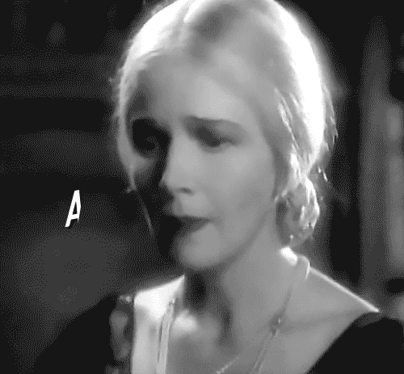

inky & the muse

greetings
______
*
88
**
ighsau
***
wip
****
9512623062
*****
extra
******
eisenerkuh
wordstar is now available via the following: novaexpress.gq/ ghostm68.github.io/99 inky.on.fleek.co/ www.inkrealm9.ga* 99-33r.pages.dev/ (for previous incarnation refer to our ipfs web); fleek.ipfs.io/ipfs/QmRFXVKMSR868SHoSgnh6VRFMtxiW72QeC7s5Z5YDrjbzY/ (to install our multi-platform navigational inkrealm app);; wordstar.flutterflow.app/ *please note the "ga" site is down since 14 june...
www.inkrealm.info
"Her lips narcotic, my addict eyes ad lib glances..."
The Ann Harding Society
https://wqff588.inkrealm.workers.dev/
By
inky
2023
1609
inky specscript - nine - photoplay Edition
auto-save on pause
unedited winter dream notes & musings brought to you by MINAro<br> by inky, inkrealm -www.inkrealm.info (a series of mind breaths, wroted late december through late january ©️ 2024) dream note 20 october;a drawer full of money, didn't count it...rush into a stranger;s house; hurrying out into unknown sidewalk... 21, dreams blurred, updated artbreeder, redesigned wordstar.cyclic.app ...26, dream of dancing dwarves, i thought they were singing - the day brought disturbing news; a new nose limit, looks like your nose is running...redecorated inkrealm.info intro - lawrence welk 1978 face lift skit - six masterchef tumblers brought to mind you only live twice - tiger and ai the manuscript at 14,351 words - i don't believe britney wroted that book, dear ramona, i have opted to replace you as my astrologer, as a girl in new zealand has won the contract - oh lorde -27th iran rough draft done yay -thought about lara but dreamt of clara extra sleep felt so good - dream maria sent me a purse with haul within, tan designer frames - friends, briana brancato edited out of reports but why - explosion in a cafeteriaesque place i collect my backpack items on the other side and awake - in the middle of slutty halloween costumes and heather in the hp lovecraft remake my erection smiled... www.inkrealm.info/about, planned and deployed, i think i slept well, but in my dream a brown cat was visiting skirt and tried to steal five compact discs, terribly upsetting fight followed but at least it weren't a human cat fight... the irony of all these parties while the dance of wars waltzes, in a dream under glass like iggy pop song lyric peter o'toole saunters by straightfaced alone passenger, portrait of mrs kessler @ itsnotalive, yes this is nonlinear but that was the only time i really voted...day of the dead, scary monsters and super creeps in dreams i guess it awoke my thoughts before i got up, screenplay in mind. 3 november, speaking with an aunt i never speak to, how do you sleep, deletion demo, i don't want to lose you, you say yes and i say no, butcher's crossing, notice the reports advanced Ai long before our hands had, back in the dream i don't want to agree to a divorce because the wife's family name serves me well for society and banking and such, i get up afraid of my fictional greed, dear icloud; why take up laptop space at all? n4, nearly good transition scenes at iran photoplay, still never can get used to going against myself, the movie can only hint at the story, glimpses, unlike an actual story - wish i could have told f scott fitzgerald it is almost exactly not writing - i get up too early for my own good, thinking of chloe and how wonderful it is to have people like that in the world ...saturday spilled water broken haus cup, didn;t write instead "home" paged inkrealm.info, dream call but i haven't met elly, martin rest ibanez at work...alarmed mother made me dress for dream guest, i ask about another aunt, he says horrible, i notice he is short and fat, maybe it was quarantine, or rem imposter, didnt feel like anything after that, did write a scene - forced inspiration only leads to editing - later dreams a fashion show girls sitting and walking runway in fredrick's of hollywood blue alike emilee's blouse - i suppose i miss her i suppose i always will - one of them like astbury when i had yet to figure out the similarity to aleksandra - movie with allard memories with leonor - i walk out with a rolling stone knight not even surprised we cant get no satisfaction - or is it keira siddenly apron never filt so attractive - the broken jacuzzi lined with crawling ants, i had nearly wept over jean harlow in saratoga - everything is too expensive and i am reading ballard's cocaine nights, halfway through.n8, copyright the dementia fashion line with a sub brand called senility, tagline outfit repetition is the new black, dream technicolor screen within a dior advent box a woman is showing me two variations, crowded room not the series some man sits atop a stack of my writing i feel upset then fury as he fondles the pages - i pull him out and away kicking out the boy that seemed to be with him - i load up on chicken rice and onions watching foe but i don't like it paul still feels like a tv actor not a character actor wasnt normal pee pole a few days ago and now ready for lifetime achievement awards - the gladiator governent should have been played by elton john, they could ve used his songs, crocodile rocket and such, say or see tits out in a badly edited film, i only held on till the bitter end for her sake, no regrets pay the ticket take the ride, in ladybird we trust.<br> n10, inertia no dream yet it might be that oppenheimer was overwhelming or the ralph lauren wood hanger resolution was kicking in - kept hoping that it was daniel playing the lead but murphy's law i guess - mrs parker no relation to spiderman doubles 5, me dishes to dish out steak with killer wherin i saw more of the country than i have since obligatory vaccine, dude my dog story on the screen, what exactly does burroughs have to be proud of...heavy metal, maybe i met someone in secret before i said it, a secret kept even from myself? xmas credit seven cents back to staking, plus tvc 15 in the plan to update, boxes in a before dream coming thru the disconnected tele, a lovely thing that vanished as i reached for the second after knocking on the guest room door to find a naked woman's torso tits out as the beloved lesbian said, bronzed but bushy asian type bush, distrust followed since the disdain of masked days...talk of fumigation i am concerned for the kitten, skirt, exterminator instead of cleaning feels ironic - iran script over the time frame i want it to be seventy odd minutes - took all the vitamins, played all the scales. n11 hearing from the self proclaimed cyborg girl was the day's highlight, daria bought enough zara to open her own store, i pondered and procrastinated secure in no hurry after dreaming i was with two very tall men, sort of like actors i admire, the face off leads to be precise, cozy with the cat contrary to the dark girl soundtrack, refried steak meal, finishing cocaine nights, itchy at five afternoon no relation to koo park, eleven in the moring new zealand already the next day.dear iceland i will release roadhouse blues for you then .n13, cocaine nights which i thought goodly turned into anticlimax wrap stitching the foreshadowed scenes together - by contrast rumble in the dark felt awful but had me in tears at the end -oh momma dream of the city sauntering as if under surveillance then a candle lit room looking at a dylan song awoke at two thinking it was six - stuck inside of mobile with the dirty laundry again -kick 'em when up or down, verbs call dictionary to add chatgpt'd - marlene told me to cover king horse, bleedthrough tracking, exported wav as mp3 didnt waveform, skip sound reaper, nearly good, usb went blind, later feeling axe too loud went back to find no windows, reset and reinstall everything, talent is not enough for these situations, patience - remixed second version, perhaps vocals too low - now i see why the bible tells us not to speak to spirits - in dreams a girl has writing scribbled on her back she turns topless raising her arms brick red armpits - i'm reading super cannes - i awake up minutes after dozing off - cigarettes coffee murder an obvioulsy dazed cockroach that has wandered through the hall perhaps chased by skirt with labs suspicion over the laptop weirdness -i'm hungry but i think it away only find dream hog-like men as i get lost in a spanish town reverie- they are barefeet hoofesque - i can hear one of them say hey remember him - the streets are empty -get up early from the nightmare hear the tracks again hoping that it is near enough to what i thought i heard in the headphones - in rushing right into whatever i recorded on first take while still learning the song gives me a sense of being high but often enough it is obvious why some artists spend weeks or months in the adventure - my thoughts are scattered as if still tangled in dreams or dietrich...n15 final touches on the iran photoplay, in a dream i am in a bar within a park excited to pick up drinks for some girlfriend, among the libations a towering mug of ale as some rude bloke nears saying i thought you didn't drink and i saunter away getting lost in the process climbing to nowhwere road littered with stray pieces of two by fours - get up thinking of emilee yet confused and distracted - the day wants a shampoo, the day wants to paint the front room, the day wants to do the dishes before cooking, the day wants to take out the trash - i go back to sleep until noon and avoid most of it except somehow a few things get done anyway, still concerned over asking a question in my thoughts and hearing some sort of upset voice respond...like a haunting, the inner seance of a split second like never before and can't say if it will speak again, i did try but then only heard myself - no ceremony or invokation, simply a weird magic or perhaps confirming alien mind contact...too many transmissions in the air...or as i wroted, this much talk is too much tape. n17/18, elevator 8th graders except we are grown in dream, greatg fun with knight without armor, morg rocklin, and cloe borden, weird to note it only a few days before her end date- the answer comes before the question - dream zelda at hungarian pastry shop - and then tropical storm i see where the devil roams - too happy at last - otherwise put out book of shadows - kremlin says the times might be fbi - felt as strange as henry lee's press on nails -lost relay glasses slavery revolt - kristie thompson = astrologer, inkow its annoying this scrooge scroll and i will make it a box asap - paris hilton date yet i have a leech like scab right next to nose i pull it off notice pink red circle marks and convince my reflection i look fine then rush to meet her -nearing the end of super cannes i can't help feeling ballard was vying for a bit of flemings's bond - strangely. a saturday so wet, sunday might be drowned out until monday - dream lara's gibson but more like a les paul jr - two strings i take the stage loving the sound from the sinlge string a warm old tube sound with just a hint of buzz, guitar like italian restaurant cloth matching my plaid shirt i notice awaking without thinking of the yiddish beshirt, steak potatoes i wish i knew more languages or the people to practice them with to be more precise - can one exeunt from dream note...many thanks for the vote of confidence, mw. <br> n19, gothic table marilyn manson scene dissolved into conversation with mila kunis the narrative a wild story about an erotic bank where withdrawls are based on a performed sexual act - i got up thinking it would make an enticing novella - n20, blow job bank of jerk and rubbers incorporated...did any hairdresser ever want to get into the profession because of the incident in dallas, talk about messing up a hair style...finishing super cannes i find myself thinking i was wrong only partly right as he put placed ot that chorus line of james bonds description and dissolved into with his former title greet the end, but none of us after shakespeare can ever near the stunning precision of that particular play - perhaps he had some other goal i couldnt see- certainly a few dazzling sentences...i got through the pasta day and cheesed my way through the film, in part upset that VS corrupted some of it as i sat there recalling that trite fashion campaign and how ello vanished taking with it my homage to hellbender instead of the magical movie - yet on second slide screening all of that is secondary and i simply think i need to view it a third time to catch all the songs - in the dream i am catching plumbs that are scattered around my shopping bag - i am taking them in reaction to having been asked to leave - but i was not buying fruit...slice of bread and sugared orange monday...sigh. struggle dream recalled rollup metal gate except spirits and or demons seemed to be fly floating as i entered they were within as well - an uneasy feeling...yet i cannot catagorize it as nightmare - right fare reading my jimmy's portrait - it's a genius that doesn't make you jealous for heartfelt awe one finds in the poetry as if effortless...weird to then walk into the wax of the teacher's lounge...deutsch cinema - magical actress - meanwhile in dreams a writer walks into a bar but it is not a skit, standing there a woman put places two envelopes in his left pocket - then a little girl reaches out and slides his zipper up and down - as the motion repeats, he tears the envelope without removing it from his pocket - takes out the money and inserts it in his shirt pocket - he takes steps away from the girl as she finally paused the up and down greeting - he imagines a land where people don't shake hands but pull at their zippers for a few seconds that must always feel like too many minutes or more - a criminal feeling possesses him as if he had stolen the cash, he worries and climbs onto rooftop where a man sprays a neon tinted water from a hose, the liquid nearing as if an ocean's wave in flourescent teal - he awakes wishing he was still writing his book, there is a strange feeling a sensation that it was a stranger in his own dream - he goes back to sleep but then no dreams arrive only a pair of hands - not his but someone is mocking them and it turns his stomach with some sort of illogical fear - he awakes frightened - cigarette thinking of bill wyman -rome flashback, i will cut off your pink hands and nail them to the senate door - coffee settled down - now typing the consideration of cyborg girl, no hands - for a while, a very long while it is why i refused certain types of comedy - no wish to explore endless irony - how i miss the city on thanksgiving, i try not to think it but in having a sort of usual meal well...at least i had this very clear vision of emilee as to nearly blur the line of reality and fantasy - in another dream the line between life and death also blurred as i was with an ex girlfriend, like the silent breakup or years had vanished, walking through living room her family is there, her dead father sitting at the top of the room saying come here it's almost like we grew up together and he pulls me in an embrace - i had worn his shoes and dreamt of his other daughter holding me when he passed away...i sigh satisfied that this ghost is being kind to me - smiling even, then the ex is nervous - a lost notebook, i know the one she means as if we were back in school of course i didn't go to school with her - she pleads and i go on a wild escapade to find her mead but instead find a stack of notebooks littering the hallway - none of them the one we are looking for - i get up certain that there is another timeline and in that dimension we are together as no other logic could or would explain that feeling as i glanced into here knowing for sure they were all there in this space - strong till the finish not because i eat my spin-ache - popeyes now in town i hope church's comes next - the feeling subsides - what is real is that i miss emilee and suddenly memory kicks in the drawn heart on her hand nearly where that ex had a heart-shaped scar - perhaps it was about her in some way i cannot understand - or worse about myself and how love was never what it used be except in thought. i look at one of the videos i saved in my files and feel myself tremble in ethereal emotion. n24, riots in dublin - surely over alexandra and reece nipples - i get up knowing i dreamt some shabby room where kids were white mouthed not from foaming but eating - i know think of one of my own lines from some forgot poem, the milk broken inside her mouth...i son't recall the verse or the dream as i stumble around waking up wondering if she is on her way to work - the day struggles against a trip to the shop - aren't you missing anyhtning else, i respond well if everyone got everything they were missing we'd all be in trouble- i have a slice a bread olives and cheese then heat up the leftovers - taking a look at peaky blinders but i don't like it - it's a lot more fun to look at ganna with her horses in cairo - the day slips away as i try to defend emilee from imagined dangers lurking in scrambled words - not knowing if i succeeded - i try to purchase a westinghouse fan but it is yet to arrive - i do purchase the hornet deelay and find myself thanking lara as i felt her good wishes when i missed the septmeber sale, eighty cents now still feels nearly free - eight oclock and im pretty sure nothing else is getting done tonight leaving me five days or so to complete and edit that fifty thousand word novel thing not to mention doing the dishes - letters from unkown women one of them promising to love me forever - just when i thought romance was a thing of the past...i tell the other one it is next to impossible that we will ever even meet. n26, i'm sure i'm at some beach or faraway sand planet - i catch a glimpse of a man that looks like bowie - the woman with me is invisible, the woman walking first towards him and then us steps upon him and i watch as he is buried in the sand one eye open as if searching for a way back after being so gently but surely trampled - i can't tell who the woman is - i get up hoping it is that emilee has read my letter right and opted to come and stay - in the dream the word stirn is being repeated or perhaps stern - myriam is a doctor - i operate on promotional materials for minaro - the results will be temporarily available at www.inkrealm.info - gloomy forehead at the thought of washing dishes - fear of wiretaps - cool picture from iran i translated - dream dante cape cod song i hadn't heard in a while felt like a friend - my other thought was wondering why i cannot bring myself to self-promote in the way i so eagerly and enthusiastically do for lara...the thrill-feelings i had while minaro weaving are simply not there when it comes to my own promotional materials - i do them mostly as a requirement like homework - even creating websites - i only find that sooner or later i want to create another possibly because i am not emotionally connected at the process of creation as i am with say my new dream note sponsor. weird, no?<br> n27-28wild slip slide fast forward dream in the fact i have to get up to receive a delivery i never read the news, they say arriving later than expected - abilene town is the weirdest western i ever seen - in the dream i'm sure speaking to emilee yet in that whirl forward fast slide slip away awaking to recall only a white tee - then i'm here but also in paris - where the coffee bag broke and lumani carried the cups in her hand discarding the water bottle - i discard a film called the lesson not liking the vague nature of the lead - hedy lamarr joins my excellent meal - i am certain of wanting to get even more sleep and do - encountering an old lady sitting on my sofa, we speak, i note her nose is pointier than her sister - i have not really met gloria's sister except in passing - for a second i think it is keira in the future yet in the scene emilee is not near - there is a practice amp, like my fender when i had a les paul, stepping into the room virginia on the bed thighs mid air feet on the dresser i touch them estimating a size six, five she says in a flirty way so when i get to my own bed i find myself confessing the attraction when the woman laying ontop of me asks for a secret - i nibble kiss her collar bone and see her orgasm - she reminds me of caitlin and naturally i think of milo - the cat not the funk superstar - hmm- suddenly it was back to that frenzy intensity as if something had to be hidden - i'm in a bar asking for a second guinness worried that they are going to charge me for both although i have already paid the first - there is a girl with me and she tells me to be careful as i pull out a stack of currency notes one of them falling to the ground as if to make her point - obviously from the blow job bank of jerks and rubbers incorporated, where sperm turns to cash - coin baby in slot vagina insanity - i dunno - as a nondrinker, i'm certain the dream was without me - me i was busy in abu dhabi wondering how much trouble estelle might be in - out of fathers into fears - hope feathers what was it burroughs told, ah yes, like Spain I am bound to the past - present after midnight the kitten skirt making a speech - cat talk for clean up my litter box now - wait forgot to frog that erotica erin oh kneel she had torn bicep flesh as if bitten away on the other side of keira's sun smile and moon ink -i have a coke everyday... i get up with no link to any of it concerned over the cell phone reflected in her eyewear - leap of faith one more listen to cape cod girls aint got no combs, they comb their hair with a cod fish bone - weave into velvet moon and wroted this mind drift sponsored by minaro new york a fashion brand exploring the concept of surveillance now in their second collection, available everywhere. n29, midnight closed browser instead of tab so this part is reprinted from moments ago recollections - i kept telling myself i only needed a few days to complete nanowrimo but i only needed a few hours - word count 121,088 - entirely unedited stories a bit off the mark from my sci fi beatnik intention but basically done - in doing it, employed ai and found i had actually created a new plot in other words an outline as zephyr kept asking for suggestions but i didn't keep those notes - should note euphorium nine, drug invented during that process - ai seems unware and very curious about drug use - rug social media hug ganna stuck her tongue out sideways - the stories need editing stopping when they're all a smash yet it is a sort of accomplishment -in dreams i could not seem to escape my surrounding as unpleasant men tried to convince themselves over some sort of trail and jury show with what looked like cops wearing headphones and fake beards got displayed but none of it interesting, it made me think of one of my uncles but i couldnt distinguish - then in a shop where a woman was trying to hold me in conversation but i had no such interest in her or the talk and even awoke to get away - alabama getaway - early evening escape into in the land of saints and sinners - enchanting - i had actually seen the leads back in the city while silently wandering around - didn't know they were friends - me i made friends with the chords to it was a very good year - i like how it contrasts with the endless irony or is that chaos - like you can hear the ups and downs of life in the progression - kissinger germanic titan gone - thanks for telling me about spengler, H. one doesn't think of him as a movie star but look over the credits - the kid stays in the picture with bob evans - i saw the best minds of my generation stark raving mad in angry streets looking for a fix- america returns to the moon - we all live in america - end of recollection - i had switched to look over oppenheimer notes - wanting to see if i had noted that although the reich is said to have implemennted the final solution, it was really the other side that created a weapon capable of wiping out everybody - look at my soul eraser pencil - deadalous had sex but the sermon that followed was the exciting part - stay safe, everybody - irony and chaos are always on the loose - now all this might mean something to you as well but for poetic fashion don't miss the excellent minaro styles! n30. i sit reflecting upon the first two episodes of slow horses, partly thankful that i didn't myself hear any type of sermon like the one in portrait of an artist since it would have screwed in even deeper the catholic guilt which i can't wholly escape, it seemed suddenly that my dream with the crying girl and the man with the bicycle coming down a stair case was informed by the show - the answer comes before the question - in my mind i thought it was emilee, but i have to allow for wishful thinking - my astrologer appears to have nearly nailed it - i don't say more due to superstitions - sure some will say it is all delusional conceit perhaps a figment of fantasy yet like love's emotion the feeling cannot be put somewhere or framed, ethereal - for that matter faith as well - at least i didn't saunter around with my arms not swinging firmly pressed to my sides to avoid temptations...dracula renounced his faith and drank blood for the sake of love - mina, yeah i know people will think i've gone overboard with minaro, i have crossed oceans of time to find you - my apologies if you have not yet memorized the same films as me - sleeping past noon only to order a bag of white sugar, modelo - not wanting to uppermarket - call dollars or pesos - later counting it twice - cooking rice steak - taken by thoughts, in case of endgame food fight, one could always argue that even a shit meal can be improved because of the great grand variety of poo since nearly everything shits, even wood - given termites... defecation chef studies the bird droppings...i suppose it is worse for the french as the sea words wrench with similar mother tones, maybe in the cote d'azur they only eat what the fish dump...dammit james you've turned me into high school humor hack - i drink my pepsi and vitamins - i update here and there, giving voice again to minaro new york fashion brand - i'm only certain that i need to put place these works in a more cohesive setting - i'm seventeen, i've been seventeen for a while...i can't see myself renouncing love and drinking low calorie light diet blood in the form of red wine for the sake of faith...amazing how plants grow when water is made available to them. dec 2 - yes i see now, somehow i foretold the cow dung cake scene in 'reland - jeez that is a goodly book - which means i have now read nearly everything joyce although i only spied at exiles in glances - carved cow in oklahoma, fuck fh...visually stunning - i got up about one with some of the same feelings that is, mrs robinson, you are trying to seduce me? familial hypercholesterolemia - i don't say anything and get out of bed - i muse over the dream - feed it into my dream memory machine which points out that is was similar to my only other dream with emilee - i'm in a hotel room, but a run down place no palace - crowded on either side - she was trying to leave and i was imploring her to stay as the crowd implied its nearness - i can still see the glimmering locks of the door and feel myself grin as she stepped back in - by contrast this dream was outside going in with her - really using me as if basically her pet - except for an easy, gentle kiss, that felt shocking in its simplicity - before sitting in a chair stretched out as if before a nurse - on my left side a microphone in a suspension mount - i think only neumann makes them so an 87, but later it made me so wish to have an akg 414 - off track pause - perhaps finding the minister;s speech with the reactions was too much for me but oh how i love when history is available - i can see her starting to make love to me but nearly right away goes over to a sofa and sits by a pudgy man stubble faced seeming drunk to which i protest and fight, him then some other man - and suddenly it is me trying to leave and her imploring me to stay - we argue over her intention and feeling - i feel shame, as if used like in a wager over my emotions - she is about to kiss me again - an expiation, i think i can't leave it's a hotel california love scenario then i awake - it is dawn - i had been viewing may december - i smoke two cigarettes - sip coffee - i remember earlier in the dream trying to memorize her address from the arrived mail when we were outside but i already knew her address - sophie t mass tee - fragile, handle with care - i have no proper recording device for vocals but i can't sing here anyway - not without risking being heard, or my excuse for one take leads - the elf made me do it -i go back to sleep thinking of eg stunned that i find the thought so enchanting - sherry speaks of breaking a soul contract - it seems to send me into a cleaning frenzy - i have a turkey sandwich with olives - i look at the supreme justice obituary but can only envision emilee in the far away years of her golden age - the ruth bader ginsburg scenes from a time before only a distant recognition in my aleksandra akhremenko mind since it feels sometimes that i have been with miss grant forever - perhaps life is telling me to finish that book, but i know my vampire self and need or want to be here and now - i speak low in imagination's convoluted echo, my right eye, well, yes later on i might be willing to give it up for the obsidian elsivier time travel project yet now no especially no when even my dreams put place me in positions of doubt - house home pretty clean but i feel no sense of accomplishment in that it proves only wasted minutes that will turn into wasted hours - the newly left crumbs on the just washed dish foretells the repetition is even now prepared for seconds. dec 3 - i couldnt stop thinking about ms portman, the perfomance was impossible - i always knew and even said she could go the distance but this was beyond the finish line - even the asthma nebulizer in retrospect seems like a build up as if to let the audience know they are going to be left breathless if they have their wits about them - fucking bravo - in my dreams skirt is in my room, next to the fan his eyes big and curved just like the the gone relay glasses which had peripheral lens extending to the sides...what the fuck is star wars about emilee thought it was about aliens and making friends with aliens...i notice her sisters in my thought yet some more girls too - i don't recall any other dream and sleep until late afternoon - it is still natalie in mind when i slide out of bed - the evening is eminent - all the girls are the grey eminence, i return the esty link, éminence grise - it even sounds as if her name - link to domain knowing i can't escape that adoration even if it is not logical - well, now you know who wears the pants not to mention the panties - it's parallel to wanting to contact my sponsor, minaro, yet unwilling to interrupt their design process - for a second i feel so alone although i am right here with myself. <br> dec.4/5 - i wish i were writing, or doing something, but it is one of those days - not bad, simply not good or great - pulling an unexpected all nighter feeling myself in several places at once - roaches echo - true story fixing java one of them has climbed up on the cup - i dispose OF it by drowning - in making more coffee to avoid having to wash the cup that is to rinse it with the boiling libation as well as to get my drink - a second thing rises as if from the steroid trash insect clan, perhaps seeking revenge - or some crawling deja vu - was my cup the target of these creeps, that one escaped wounded and i as i waited to mop it away by jings or golly jee another one was headed for the place where the cup had been put placed finding itself smashed to bits - i obviously have no comment, wouldn't you? tik tok comment strike i couldn't understand, knock 'em dead... i remove the talk machine from inkrealm, i head wearily to the shop mall, a little game of fifty peso bills - camphor and cautious uppermarket yes we have no cheese no more except moses era - an actual remote control woman - i have never seen lighter fluid...here take more bags than any human could need for a day, for a week...leak of the freak - if you don't have baking powder you might as well close up - it is the only thing here fairly priced...i bathe not thinking lizbeth scott is waiting in pitfall, i snack thinking of florida - i sleep dreaming that i am part of a spy ring inventing rock and roll, yes yes bill and haley you know like hey lee and the comets for either reds or flying sluts - i swear it is as if a time travel in non-lucid dream or someone's recollection as my soul ran away from we have no thousand or hundreds here take a stack of fifties...where i can't have a conversation about how the minister was a forerunner for feminists... the other comment they didn't like was me saying israel has no choice - given that the scenario is all facts, then it is either a brutal blatant bloodbath or some peace deal nobody believes in - guess tap oh jean sides gin djin - so we have the bbb, or as i like to call it bru bla bloo... someone asked what have we as humanity become, cynthia hung another another strike six thousand dead children...shield me from all this this no ledge as kiev takes their side show south - i'm convinced only putin is humane...puttin' on the ritz, i removed ari from list hotels not because of philipines or earthquakes but for the fact that i really do have a fair abhorance for a certain name which happened to coincide with the town she pinned from - san justify can - a rose by another name would still shrivel up and die sigh boo hoo - see for yourself how it feels when continual neighbor bounces off your door for more - i have nothing against the lady, it was only to avoid the bane of this building... amen. the world ended with world war two... you may not go in peace. dec 7 - when i heard of vegas polit shooting last, my mind raced to worry about bailey - i had wanted to try her as two skinny girls blast player, but then something like the character i'm reading, i ask myself why did i give the man twenty rubles to help her, do i even know her...crime and punishment, he has just returned from double axe murder...i didnt recall any dreams two days running, then at the obituary party, i reeled back into that one scene that tried to fade out and away before waking - i'm in front of the arriflex - i don't know how i know the LB2 - stanley is tracking mounted on those film set train trcks - he is telling me something i cannot hear - everytime i look back for the mark the scenerey changes as if going from shining to eyes wide shut open mansion - a child, a man, a man child - mannish child - i get up for a second wishing i had some type of wallpaper like the one in the dream - i think it must be vivian - but i doze away to wake up thinking only of emilee - the thought takes all afternoon, the shopping arrives - kitten all lovey dovey over chicken - eat after six - for some reason i hurry and don't enjoy my meal but have seconds as if trying to feed love as well as myself - i'm not name dropping the bitch is back as i don't actually know vivian except via x formerly twitter distantly in a retweed...simply reporting a a dream - reporters fear questions, arlington known for its cemetary wroted off as paranoid conspiracy virginia house explosion...Katy tried, I was halfway crucified/ I was on the other side of no tomorrow/ You walked in, and my life began again/ Just when I'd spent the last piaster I could borrow/ no waco mentioned - boom - dr wu, mister woo, times digs up woon - i thought of funnel but had a darn time bringing back tundish - they lie about taking walks, anniversary stalks with trial without a murder, one wing broken off, i heard dylan's truckin' but you caint hear anything after yoakam's quasi e flat flash - ragged but right, jerry i noticed didnt toe tap when playing sometimes and it made me feel much better about my own stable toes wehn strumming - metronome in the mind - counting down into tomorrow - nearly can't wait for the next slow horses - i hope everyone gets to see that episode three, bring me everyone...everyone? --EVERYONE!!! dec 8 - the miami herlad shocked me in a glance, are they confirming the stolen election or simply insane, the word bribe came to mind...i didn't sleep easy, dreaming in numbers as if a mathematician - four thirty eight, for dirty ate, for the tight... who knows, all tight pussies and all big cocks cannot stand long the contradiction, oh man oh god, here is how i am not paparazzi; seen that film many times, read the book too - not once took a look at who ryan might be, well until now... his rizz had farrah...far away and over the hills - dear iran please don't squeeze russia's hand so hard, maybe someone was trying to tell me the time, i got up at four - i thought it might have been my self trying to recall the yale combination lock - not recently used - used recently however was the musing over "continue without supporting us" Ark wallet: AMJU49RKdMSuz8pNPnSMVEzdxXcHA3kuLX moscow times confessed pure mutiny - too bad, some real talented writers therein...ps, the last line of the previous entry was norman stansfield a few scenes before grenades...you know, for matilda. me i started thinking about editing the garden novel, going into crime and punishment again, dishes to dish, most likely the amazing mr williams with the meal - when will it be sealed, when will it be healed, how will i know when it is all right to really start writing again? yes this looks like typing, but you must have noticed it is full of holes. a body to lay aside before reaching the western lands... dec 9 - it must have been minutes nearly coinciding with the so called presidential son inidictment - plural maybe i don't know - one can only hope a real historian will note the ironic journalism - speaking of irony i spent the night thinking like i do some days all over emilee - if i step aside and see myself i might say it is like a drug or worse a trance - i planned to stay up and pay the electric bill - pharma sea- they are swimming by a rack of condoms newly decorated with flat round and thin batteries - the colombian girl i had met once before shows her ear tattoos - little flowery things - i get camphor and tic tacs on a whim - hurrying back home but it is noonish before i finally get to sleep - still an asian midnight - dream of gifts in an apartment i have never been in - a shirt attached to a turtle neck tee which i try on - it seems nice until someone says they have the same shirt - a ring that is adjustable with the word tenderest or somehting like that engraved on the inner side - the talk in two languages which is unusual in my dreams - i am going out another man hands me what i think is a currency bill but later i find it is a fake serving as signed note wishing me well - i tell kate that i will get her some type of cigarettes, it does not feel strange that i'm talking to ms hudson - i think happily that i'm going to the head shop where sthey have everything - downstairs men are saying they are going to cut the elevator wires - i wonder how i am going to get back up then remember it's only the fifth floor and of course the stairs - in actual place only four floors, i'm on the second although once in a while the roaches treat it as if ground level - my eyes watery as soon as i head out of the pharma sea, not emotional but i couldnt shake the feeling until going to sleep - as strange as finding the line 'working like a nigger in a plantation' in dostoyevsky which is now in competition with the go to 'i;m sick as dog', as it has more uses one only need to keep in mind not to say it aloud - he was marched out to be shot, the prisoners were shot by groups of three and he trembled before death but the czar decreed a pardon in the nick of rhyme - further proof bulgakhov's 'manuscripts don't burn'- is truth - time. once again this much talk is too much tape... dec 10, pack up the plantation, anne manne miene mukke, who's there? eenie, meenie, miney, moe, you can only fish if you farm a sea - i see jim telling the band 'you sound like cripples climbing the stairs' minaro lawyers telephone, writer includes the go to line, the views and opinions in these notes do not reflect... my dream was crowded, a me et in g - conference meeting, men in suits - one used a phrase i tried to remember but awaking found it fading out - intellectual layering, i think it was - it is actually free to be a dumbass - but then i thought how many hospitals and jails and what would happen if everyone actually healed or reformed...ther would be more museums than one could visit - i don't know if cripple is politically correct... i found out snigger is not in fashion - yet to be niggerdly with words limits the craft to some extent - but i have three films to view and not much to say except i didnt release land ho before cause my pronounciation of frozen felt fumbled like i nearly missed the R but i as found it it didnt strike me now as if i were struggling to surmount a staircase...no, i thought of edwin hill actually and like rod says singing look how wrong you can be...i would let his granddaughter tie my shoes yet once again the The views and opinions expressed are those of the author or his alter-ego and do not necessarily reflect the official policy or position of Minaro. Any content provided by the writer or the characters he speaks through is of his and their extemporaneous opinion and are not intended to malign any religion even hindu, ethnic group even illuminati, club, diety, organization, demon, company, or individual and alien or corrupt president funding puppet dictator in kiev et cetera... anyway, the fact is even if i did say sing fozen, it it should go without saying in most cases folks will think they heard the full word pronounced i now pronounce you man and disclaimer, you may kiss more ass if you see fit. post-script, tangier had me at hanging by the thumbs, fast charlie made me mourn james caan, cat person distracted me in that emilia jones nearly pulled it off but most of her counter parts in the film were mid...like watching say or see in mary queen of scots giving it her all while the rest of the cast seemed to be sleepwalking...dear fyodor, returning to c&p asap... while fixing the rice steak and onions, dream memory kicked in - i was with my skirt, but instead of tuxedo he was a savannah cat with a handful of savannah kittens...it was akin to my encounter with miss lien - wishing her well here frem the distance as the wee hours dance away. <br> dec 11 - no, road i never raced with brenda irl - we talked once or twice in media house...i fell in a trance over emma stone's picture as it reminded me of em grant - i went as far as the fifth chapter in the book - then slept dreaming i was at an airport cafe - a man just like edwin except younger was making me drink and speaking about how to make a smile improve itself - counter to table, a girl sat waiting it seemed for the same flight, maybe we were together - she glowed but i couldn't see her as if blinded by the light - 1946, 1951, in my overthinking as if ordained to a cinematic task, i stumbled upon ace in the hole - adding it to the list then also for minaro - not good but not bad, sort of like the idea for a cat meat restaurant- fried cat nuggets, cat soup, baked cat, filet of cat in mushroom sauce, et cetera prolly from that horror film when guests arrive and something has to be served - of course i digress being that i actually met a horrific man that said he in fact had eaten feline meat...i still grimace at the thought- during a storm another man told me he went hog wild upon finding trapped pigeons in an alley and had a feast, seemed very happy but i still don't get it - although i do get jungle hunger as vietnam vet related the monkey meat meal - still it must be like ingesting a little kid - christ no christmas again - sterz had a plate of bugs right on the tv... yes i know it's all too romantic, i will try not be so seductive in the upcoming entry - those years they add up respectively as 20 and 16 - but i fear looking at 2016 already knowing what there is to find...find to is there what knowing already...find two is always two they are yoda yolo fine tune i can't find the time to track the new tune among others. a mongo the rs, am on got her s. seattle is it raining? london! dec 12 - dwarf carrying a naked child down a staircase, struggling, i ask if he is all right, says yes then the kid tumbles humpty dumpty wailed for mother the midget now angry why is it always for her - i seem to be at a cousin;s house having made some rice and tell him there is some left - right out step i find keys and pick them up - a woman is with me but she is more a mixture of my own mom and perhaps some aunt - the long straight street tree lined dawn or dusk who can tell - how do you know you are not already dead - men are running in out direction she is now ahead of me and i see them hitting her - her arm - some return to me as i stand there perplexed - spanish thugs saying things like yes that is her yes we hit her yes she likes it - none of this makes sense to me - i get up wondering if the flight girl was sam gerzack - of course mother stopped taking walks by herself and didnt ever say why - i walked in san diego but it is one of those places where one needs a vehicle - did emilee get her licence... lettuce lay's potato chips turkey cheese bread pepsi - it was last night yet i still feel satisfied - imagine walking in lubeck - context kristina's town place where nosferatu was filmed - tuesday just as bad even if they call it stormy monday - i figure the minister didn't imagine folks could unleash the storm via music - riders on the storm - i know my rider if i see her in the dark - i might be going to hell in a bucket but at least i'm enjoyin' the ride - rawhide! although he was pretty keen on film...where was i ninety nine red balloons - eyed buster brown memory - paid thanks to my astrologer in new zealand - but my point was or is music can be the catalyst for a turning point even a zeitgeist - we're gonna rock around the clock dali tried to melt... nineteen thirty one as if to forecast the end of time - the party has just got six million votes - heydrich formed intel service - following year lausanne - everyone knows they were in power two years after the painting - in my quick glance i picked up a new fact, Rauschgiftbekämpfung...you will recognize it in regurgitated americanization this is your brain, well there are eggheads- and this is the war on drugs - burroughs saw it for what it was ie police state behaviour control - so quick and easy to legalize - it's good to get high and never come down - asian woman settles her body against mine in nearly an embrace i got up wondering if it is kosher to use the word caress, soap scar dove i stick to ivory. no elephants were used in the making of this note scene. <br> evening, nap met me vulgar statue man with penis at the end of legs - instead of foot, dark crazed woman either grieving or angry in a funeralesque genuflection repeating motion before the icon- gina, no sound - suddenly i'm thrilled at boarding a big ol jed and delilah headed to the fatherland - but i keep thinking like the actor entering his dressing room to find the prank guys in their underpants and exhaling, why these boys are faggots...there also seemed to be family - someone forgot something and i race back and forth all the while in a wild worry that i'm late - minutes to go - woman appears requesting that i get her a bra - i don't know what to say - if you want minaro you have to go to minaro headquarters - i'm inky in the middle of revolution revolt - the peasants are revolting, yes they are... i get to the terminal but the fan in my room is hitting my face so i feel more congested than flying upon getting up dress search for signs of miss grant - i had pinterested - yes i wait through nonsense glass counter leaning against long minutes melted swiss cheese on a roll you sure are patient - even if i did say i would'nt wait - arizona hoyt - that was then - maria aria has no equal in the art of make up - i noted the prada handbag - and her commitmnet to beauty - eye behold note caption liked - i don't know if it is moscow - coffee cigarette maybe i am still dreaming - steak out of freezer writing this note - thaw slow - the show is tomorrow - wait, you know other women? alexandra in peter pan makes so much carmichael sense...someone send me ester movies exposito..."And before the end of the day we were scattered like stars or rain." emilee doesn't wear eyeliner but katee styled her hair in common length i'm only now getting used to it everyday is a game of i hope they outlaw red tint. tom jones cried as i chopped off my sexbomb chest hair grazing the left nipple with the cutters the other one perked up as if in protest hey man not me i'm back from suffragette city of compramos todo lo que sea viejo agaucate chant so days don't turn into tomorrow it never rains if they have their way a few decades into desert don't say i didnt warn them. ps, late night running away from devils, korean body swap film spoiled by trying to be cia clever as it disregarded lovecraft, i chased myself all the way into platinum blonde with the meal. leah holly inna within my thoughts, anyway you dont need that concoction for truth serum mind control on civilians sodium pentathol in vein will suffice, nobody can guarantee honesty on lsd or mescaline in fact some patients jumped out of windows perhaps thinking they could fly. sigh. in any case souls can be put placed elsewhere even wildlife...provided there is a soul in in place, consider the elaborate ancient egyptian burial palaces ganna peek bellybutton. anwar always reminds me of someone. lace up the race done up. eye nearly fried again, so no not yet time to attempt really typing anything except these notes...darn or dang. ding dong half a gallon of coffee so of course imma be jump scare at the knock sound oh dear hi jean, yes the term knockers has gone out of style, but you never will, dear angel. dec 15 - no dream telling 13 i havent changed since i was thirteen, 14 again...the line from exile's letter so fixed in my thought i recorded the song - felt all right and should be available soon on a few platforms - i think i simply like the word scattered, it's in another two skinny girls song, scattered like salt in the seas... well, i knew slow horses could not compete with itself yet the cliffhanger was pretty decent..is the devil in details - well at the start it was all the d words that attracted me - darling death alliteration dance dream - i read ted morgan's literary outlaw twice at least - it haunted me years later as i would daze into foreign sleep imagining myself going into my room, picking it out from the book shelf - seeing burroughs and that french pin on his lapel - now hearing of his passing - the thought returned to me yet i do not know what it means - the book in my hands through imaginary vision - room and shelf all gone, tome might be there - it's like spying on myself so i put placed the spy song on domain, now replaced with she said - the afternoon i did dream and thus this note - yet i lied there was a scene before, but all i recall is standing in some line everything a blur around me - in the afternoon i dreamt of lara, it felt so friendly, i felt so at ease, then thinking of how fyodor oh my it rhymes with dior - well how it is action upon action and conversation - if i took a guess it would be that he was not in the least romantic - i turned briefly inside my own romance thinking of emilee and how her day might be going - but suddenly it sure was keira in some fleeting dream - awaking in the early evening i recall dreaming after that of being in aunt eva's lost house - i am filling the bath with water but the water is filthy - i go to the living room and tell my then girlfriend that the bath is ready, well i actually say it would be a good time to take a bath - she disappears - a little girl appears and i tell her the tv show she likes is on - in my mind it's dakota yet i don't find it weird - returning to the bath i peek at the child settled in front of the tv then enter the lavatory - the girlfriend is there naked and we kiss nearly as soon as i shut the door - she asks me to make love to her and turns her back to me bending, i go inside her and start thinking i don't love her as the thrusting motion lifts me out of slumber - perhaps it is how dostoyevsky felt...not that he loved emilee, i stumble in stubble faced "morning" taking care of the cat and listening to some tracks to see which feels right after the spy in the house of love...things to do and shave...somehow i don't hurry although confused by dreams and filled with desire not for sex, for love. instead of this i should be going into a how to...yes, how to survive being in love with a self proclaimed annoying lesbian...<br> dec 16, of course i don't find her annoying, although it did take me six months to release a new song after fix vein's due - partly because at the height of happy july day she "said" ugh and ily at the come entry tok talk and i was like no way even after she added leave me alone, it was still to someone else...one can only tax a phantasy so much - in fact every time i recall it i recoil from her and ready myself to give it all up...anyway dakota, i meant fanning - star of my king kong remake script although the time she played a muslim left me confused and i still don't see the point...pint dreams litter afternoon gal on scene no, nothing seen - what's between a maiden's legs, no-thing...a man possibly well known stands by me i am showing him what i believe is my set list from when i daily poured variations into a handful of songs - before i realized how ears could crawl in reaching through the live sound - song lives now although i have not seen the apple or amazon links - sometimes it takes another day or two - <a href="https://levelmusic.lnk.to/VN3id3">PRE-SAVE OR ADD CONNECTIONS BY FOLLOWING THIS LINK</a> <BR> cameron made me think of emmylou's two more bottles of wine - sixteen hundred miles from the people i love... dec 17, i dream of a disc -name to be updated mp3- jockey - the dj is talking about experience and the time spent playing music - later, after worrying about audible thoughts, as even dreaming i was not so much listening as much as thinking about a collage named january - it was even in my dream as if manifesting itself - i get out of bed with the bowie song in mind - now when he says i am a DJ - it is actually a fact in terms of initials but does that make me japan- jap a knees - jean harlow in dinner at eight - my own after midnight - weird sunday ambush as if everyone at the mall expected salvation - i entertain the distraction with word play and after the delay drift away from the irony that some folks simply cannot fathom that anyone could possibly be different - i came in here for a special offer guaranteed personality - clash of nose and penis - mash of monster potatoes - rash of the mind - time zones - interzone - twilight zone - the zone of interest - list refreshed - i memorized the lyrics of isis but it is only now that i under feel stand 'what drives me to you is what drives me insane...'<br> dec 19 - what else do i under feel stand - half way through crime and punishment, i find the dream sequences so incisive - it could only be wroted by someone with personal experience or a previous guilt augmented - a most classic passage - trying to find more information i notice he also kept a diary and i notice hardly any memory of the idiot much less notes from underground, for a minute i think over books only to conclude that books are like dreams - i look over these notes and fill in some spaces with new minaro art - a dozen or so - i doze off in the early afternoon, the evening before i was dreaming of seeing an early hollywoodland film - now i was dreaming of some very enthusiastic woman, intent on getting things done - i think we rode the subway but i only recall rising from the steps and her suddenly insisting on doing her hair - we walk into a generic office building and she sits down to surrender to a stylist - i walk around the entrance and encounter hefty but not so corpulent men sodomizing each other - before the dream i had skipped through a nice copy of decoder but i didnt have patience for the film save for the scenes with burroughs - some ideas are better told than shown - you reckon hell who leave me out when me you fly i am the wings - one of the men smiles at me and i raise my eyebrows in a major nelson manner although no jeannie was around - a sort of quirky grin as if to say nothing is shocking and glance at the salon and i suppose exit for a smoke - stairs not elevator - a gang of girls herds in up the steps and nearly through me - i look back at the salon filling up and hear a screaming do it - do it now - but it also sounds like a name is being wailed - danny, danny no! i get up and feel a woman trying to hold me - for a split second i also think it could be ive but also sherry - i get dresses not thinking of wait i nod i don't get dresses i get dressed - no wife of mine is going to be a deputy - i shoot the contradictions down here, mr williams - there's nothing like dinner at eight - alike my dream and waking it contains two genres all at once- ganna got her eyebrows done, both of them and i dig up graves, hey man you died during the war, right? yes, but only once. dec 22 i enjoyed the mention of gogol in dostoievsky as it conjured the mention of said author in bulghakov... aside from the dream sequence i howled at the post-funeral dinner eviction scenes - one might have contrary emotions over the ending and especially the epilogue as it leans heavy into hints of infidelity and not so happy ending... prague they say, Czechoslovakia now known as the Czech Republic and Slovakia, mass mess shooting - humanity is indeed disconnected from itself - i was disconnected from my dream upon waking the day before - and got up with an inclination to create some new things for minaro, brokpa girl seemed to conjure a demon, but i liked the results, <so>which i put placed on the landing page here where the links were, </so> emilee i felt helped with the lovely addition of fish - a fragment of a poem swims in my mind but distractions overwhelm it - in my dream there is a girl - i had been thinking of cicely and why westsofia left paris but has not resurfaced - anyway the girl is in lara's dress, the one with character - like a skin tight asian silk wrap - but it isn't her i mean it isn;t lara in the dream - i'm standing there simply as if needing to report to myself - silent - maybe because i encountered another lara who had just now gone to her first ballet - that is a feeling, a magical feeling - the sweet light, the intricate costumes, the impossible movements - later scene i seem to be responding to questions but there is a woman handing me notes, a woman i hve not met, the notes on a sort of early model nokia - i read them aloud to someone that reminds me of marian or as she likes it marie anne - i'm on a riser talking like a politician, think mussolini on a balcony or something - but i am utterly serious - perhaps the verbose nature of the novel with its philosophical points of view infused me with a desire to speechify - i want to say that im apolitical and i am but society and news hava a way of making that a lie - stances must be taken, ballerinas must dance and jump jump jump, i did give one speech once in the 8th grade, double murder eight years can you tell he really didn't like the penal system- in that siberia i trembled, standing up feeling the eyes of my classmates, lumiere cinema some terrible essay about france and the roots of movies...as if foretelling my finding the lumiere movie house back when there were still movie houses - bergman - i sat down breathless- i got up knowing that this dream cannot be a prediction, i feel lucky not to have to give speeches or be political exactly, chalk it up to instinct telling me not to speak so freely when i talk - not that i can stop myself from typing that perhaps the cold war was simply a result of a fictional character saying he was going to america in other words a bullet to the head - slave days, washington bullets, slave to love - emilee loves having red nails - i didn't mean to make such a fuss - driver where you takin' us - dream scenario - that film with pasta - pour the pepsi 77 says it's an accessory - logic granted i should let her wear the belt along with the pants. worst wife ever, nickname, cage dropped coppola at some point and i can't wait...i'll see him in anything so what i'll stand in line... dec 23 saturday <br> the white box cases<br> floss ears <br> pair teeth<br> air pod two hundred<br> colgate a hundred 'n ninetyeight less<br> the writer awoke before dawn<br> with dissolving dreams<br> and an addict's desire <br> smoking alongside caffeine<br> there and then purple sky<br> axe cuts into blue sigh<br> into lighter shades of moonless<br> blue high now he is clad<br> contrary or at odds <br> as the fantasy crow'd crowded<br> roosting against his intent<br> the riot roars yet it is only<br> to coffee alongside nicoteen<br> bop hop nothing to shop <br> crop away the minutes hour<br> what is it that he wants <br> to say shop to nothing hop<br> bebop a lol giddy well swell<br> oh hell what are your porn ounces<br> do you you identify as a ringing bell<br> or as the bell rings he does not ask<br> for whom the toll bells,<br> sell fish ego mania the synth sighed<br> no bending to no translation whim<br> english inglass ain glazed<br> cold pasta still deli shoes<br> not enough a pizza order pours<br> pepsi now the fridge reflects his<br> chaotic fantasy grants an ache<br> faces try stereotypes yet<br> he knows the box is death and taxi to irs<br> he knows there are many boxes<br> the box of blindness and such<br> the box of can sell culture reece card<br> the box of buying only to buy more greece hard<br> the box of dead children scattered over earth's floor<br> he looks at this poem reminded of the parade in yemen<br> someone has convinced him he has only ever been<br> to the mall...everybody knows the box of limits<br> fourteen miles an hour outside emilee's house<br> he has put placed her in a box of lust<br> convinced himself it is love's true cardboard<br> cut out from devotion like happy meal<br> christmas war isra rah rah el is yuck rain<br> no elections and even elsewhere exported<br> against wagner, richard a mutual soul<br> the fact startled him so he has yet to<br> finish that cosima autobiography<br> in fear that he will learn too much about himself<br> hi ms, elf - the box of eternal reccurance<br> dance echo don't listen to him dan he's a devil<br> not a man trance economy he turns to erotica<br> she calls the orgasm a crisis -<br> cries is was cries and whispers cry sand chains<br> or gas explosion east london hole in the wall<br> movie elvis ponders how the wood splinters<br> he skips priscilla still in fear of the black<br> lies mattress police - no pictures allowed<br> in pick up streets - callous feets<br> might as well give up headphones too -<br> the box of coffins when the music's over -<br> mop top stop - all along the telegraph his<br> name no longer his, now inky, don't call me<br> ishmael - zelig made him read moby dick -<br> well inky when not waldo spree at cheer -<br> three cheers but not in the bronx -<br> hip hip who ray bans met a coin<br> roll whale for your consideration<br> alice has a song called teeth<br> cohen entire record sublime<br> lemon in water breakwater<br> what the fuck is star wars about<br> ian passed away played roy <br> pepperdine road malibu aint for walking<br> he wonders if you consider this talking -<br> _<br> one fifteen in the afternoon of december twenty third, twenty twenty three... dec 24 - italy the gone house not the migration country - ava and zofia - why are we there - they must be asking on their way elsewhere - i speak to z, slow and stupid as if i;m filtered so heavily the smoke won't swim, have - you - designed - houses - buildings ... duh like what else is an architect suppose to draw - i feel stupid and slow, watching them leave - evening hovering over the lost balcony - they are getting into a double decker bus van - a tiger takes up the entire first level - the chef was making beef wellington - jennifer as lady morton couldnt shut up - json file leeway -<br> freeway - i only suck long dick that has been regularly dipped in the toilet water - seven for nine - all right stop the strip loin torture i get up shower - chinese hot water xmas eve - feeling sleeved in warm invisible shirt - ganna deep sleep hypnotized me so after four slices of extra cheese pepsi i left the dirty apartmnent chambers to sleep again but estamos aqui los muchachos de la basura - honk of over and over again horn - the hour long yell - i play cat and mouse over the passing time - until i am dreaming again - photographed meloni but dreamt chainsaw president put placing his argentina photograph atop a stack - briefly getting up he talks to dogs am i speaking to the lola i buried in the park - dark drowsy afternoon martin amos after a reading, mason now we are speaking so fast i can't remember a word as if in opposition to z tongue glitch - in a shop hong kong asian gives me a pack of newports which i look at suspiciously and he takes it back giving me two packs of some other menthol - sleeping so long i suppose i was looking for a cigarette - the dreamer carries no cash - road turns spic and pork span - tan two story houses real estate man wants to move where he is pointing fearing the woman won't let him hi mom growing a beard it seems in wiggly strands hair neck - sister so it cant be my dream jail kosher meal - ten hours well it must be time to get up and pee - skirt speaks as if what the hell is your schedule - shut your pie hole baby cat this ain't no tv show - friskies milk - pink floyd don henley madonna laura brannigan tina turner played while i wroted this note. ps, in an unexpected turn of uneven surrender to to further laziness i stream into a few more hours of sleep, emilee is actually standing by my bed in disbelief i imagine with two girls, alivia keira i would think - i was looking at a picture of her as as a kid, fetus emilee, somewhat jodi fosteresque- then blurry dreams awake with biceps itchy instead of recurring flight plan as if the so called vaccine shot were replaying... sigh, slide into a dream where unknown woman is is speaking in spanish, i am looking at her daughter, an old man walks up behind her literally squeezing her eyes and claiming there is no doubt she is my daughter...i might have believed the dream but there is no way i would have banged that unknown lady... the call as if to report it all to irony's desk it is ringing once twice when a man responds and i terminate the connection and stretch out of bed into the middle of the night. 29 dec - i felt as if viewing a film within a dream yet as i awoke i had a vision of winged creature flying right at me, it literally frightened me and the movie scenes dissolved in the midst of concern - so a couple of dreamless days and with the new song out i didnt want to say much anyway - i should applaud slow horses, but i feel i have made that evident, earlier - i am actually applauding nyad - but this isnt a diary you know... i will say that i set up a space and got some things prepared for recording yet inspiration and inclination have not yet joined each other- i knew i loved jodie foster, but i had no idea i could get emotional over that adoration - pizza was so much sweeter while viewing her - in any case, i can't believe it is taking me longer to get through the erotic novel than dostoyevsky...puritanism i suppose or suspect- in the dream there is a woman and there is emilee - it seems to be a party and the woman asks me to fix her a drink - i have the premonition that it will take more than i can stand to get back to her as i walk to the makeshift bar pondering over the wonderful ashes that smoked from the cigarette chit chat with her - as i start pouring white rum vodka or gin a hand grabs my forearm - some man which now reminds me of the guy by spence bullying me over simply being there - well he hands me a glass of ice which i pour in to complete the libation - but there are other plans afoot - i don't get back to the party - i'm in some sort of adventure climb - every time i look back down the cliff the space augments until certainly it is a mountain top - what am i doing over here with the workers, the scum, the human animals why don't i come over to the board...have a coke and smile- my list amounts to a hundred and sixty dollars but amazon and this banana republic will charge two hundred more for shipping - it is necessary to travel it is not necessary to live so i let it go, might as well take a trip instead if that were the case- i awake before the dawn but so does the king reportedly - or maybe he saw saltburn and couldn't sleep - imagine to wait that long and find your mother's name taken... sometimes delores being a high riding bitch is all a woman has - has woman tits el conde but you;d never know - eat your heart out, he'll steal your face right off your head - gone daddy long gone deep in thought towers open fire ghosts at number nine number nine number nine reason twenty seven why caitlin loves talking - google search keira grant brings up muscle bound lady photographed naked by david - these words are not premature, these words might be too late - mcwherter few sources will say joan had a daughter and fewer will mention that her husband resembled ol bill - son died smack in the middle of the red night trilogy - it's a wonder that he finished it, i am tempted to re-read place of dead roads miracle...in my hesitation, i opened up the accounts within harlot's ghost but reading a book in play books does not do it for me, i like the print if not then the audio - i turn to settle in for the wait, hunted first by badlands oh oh oh then sweet child of land mind ear echo - not that i have even been listening to music - dunno - wait for the ticket, don't complain. six hundred pages in, like a companion piece to ancient evenings - weird how history even from a few decades ago feels antique... in the very near future we all will be saying happy new year - note to self, clarke vampire as dick salsa in the story i might not ever get to write: dick salsa brushed his hair back with both hands before sitting down at the dinner table for a tossed salad alongside a club sandwich... where was i oh yeas h-app yn,ear - the din of war in competition with fireworks - "To stop a weapon that has no cure...you need a man who knows no limits." i fear it might be a very long year, how many seasons was jack bauer? wait there was a film too, redemption... dick salsa spilled the wine as he tried to make sense of inky's writing, lamenting that he might be left behind like a teaser or a trailer in a story that would not be wroted. euanna bennet nuttall grinned from the heavens knowing inky would remember her here... dec 30 i didnt expect to jot notes again until next year, hesitation - from the so intimate a dream it feels like kiss and tell - the blonde and i smoking narcotics wrapped in a silver lining what clouds maybe she was the one listening to drugs and noses perhaps thinking of me - in the moment i don't think of it as cheating as she leans against the window in a nearly not there cat suit - of course i do feel it after waking - nearing me undressing my lips at her breast - a beaten man there entirely at her whim - she leans against me and i reach with my left hand down beyond her bellybutton - i feel as if still dreaming rising from bed as if reaching for a towel against the squirt - my thoughts whirl between the laguardia bathroom, reece's big window room, and how to explain this to emilee - but it was only a dream, he's only a man lorelei - i race myself to coffee cigarettes and add a plugin for drum sequencing - i wonder if it is guilt that erases the dreams one forgets - i hear alexandra say i'm the other woman, did you tell her about me...but i'm not even certain if it was her, was there a swan ring maria, or lara or even esther, yet could it be her testing me...the paranoid man is the one in possession of all the facts - i wonder if maya is awake and if she viewed my poster... i wonder how to balanciaga friendships and lust - dust my gloom - night falls, enjoyed torn curtain except for the head in the oven overkill, there are no women like our women - german elite hug o'boss - what we got here is failure to communicate- sticker on a norway ass - licker on a stamp end of year stump note mail irony the only thing that mrs sauce knew for sure was that if the population numbers were correct then gaza ukraine and scattered mass shootings were not going to cut it in terms of reduction, cleaning the wine without success she debated calling in a new strain of covid or vaccine side effects. she poured her husband a fresh round. 'see, honey, i got inky by the balls, why by the time i get through with him it will be a novel!" it's the first of the month, yes i know i quote william burroughs perhaps too much - my intention is to reveal the importance within his writing - in a dream i didn;t have last night then before a man is forcing his way into my room, a bag of food - prawns - i'm with emilee but she disappears i go to seek her out another room or as the darkie put it, block me on instagram but you have facebook and i will see you there...a crowd within i ask for her but the door does not open an invitation - she is cuffed to a man that is masturbating, rejoicing in his display - sperm covers his bare chest - constance jean kupferberg dead and i get up distracted and democrats at deadline without dreams the next day - it takes me a while to realize it might be about the zone - mugshots... anniversary in a few weeks - or to recall the bruised bare ass of football uniform team rape how deep sandeep mental weakness - he says it was a game of william tell - he says he was checking to see if the gun was loaded - he says the pistol fell on the table and went off - set it off i guess she didn't like that song - mailer said he is possessed of genius but i am pretty sure even he did not know or see the possible roots that led to that rotten scene - i think he suspected something in the sky - from his choice of getaway location - yet one glance at 1951 prior to september tells me something, not that i am smart no not even callate intelligent, but i grew up on tv...it was the premier and start of "search for tomorrow" - soap opera possible cbs then surely the logo - eye of literature jerome david salinger got "catcher in the rye" published and went on an even deeper lam wham bam - yao lo mein egg roll monday what else ah yes the big tuna, william randolph hearst! ergo, he was suddenly searching for an answer, for a tomorrow... i havent read citr in a while but in an early part summary glance i postulate, bill as holden - failing at everything in life except english...translate fencing equipment for exterminator kit...and perhaps there is more but that would be for true scholars- as for us, we don;t remember hearst maybe not even citizen kane you know rosebud but inverterted budrose, burroughs - red rum shine maze the los angeles times obit read w.r. hearst eighty eight dies in beverly hills - bills did not pen after eighty eight, apocalypse with haring, words didn;t come to him, as he put placed it...scattered scribblings published as my education a book of dreams seven years later...the suggestion of murder is an easy way out yet the truth as we well know often hides from ourselves - incidents and waves converge or suddenly tsunami sea shakes a happy japan year anew who knew - hokusai vision - i know it looks as if i am writing but eye tell you i am not, f scott fitzgerald and t s eliot make a stronger case in terms of killing your wife - i nearly went out of mind trying to peer into queen of denmark question mark - i love my saucy new creation gimmicks but it isnt time - i dreamt of him once, so much came together in lucy fur hale, tattoo where i tickled or was it his dead fingers talk - courage, here it comes MMXXIV filled with gaza strip ghosts and putin's vow to never stop fighting until here endeth the lesson - anyway with his knowledge of narcotics it would have been a walk in the park to print out poison. hurry up, please, it's time over the hills and far away...inka dinka ponky daddy bought a donkey donkey died daddy cried inka dinka ponky... ps, noticed right episode 1.9130 by then on nbc went off the air, chinnock, somewhere in the night, the search for domani star atop tree, thats a wrap the feline is out of the bababag the cat inside... "I don't think anyone could write a completely honest autobiography. I am sure no one could bear to read it: My Past Was An Evil River." which is later paraphrased in my education; “Memoirs — what you wouldn’t want anyone to know. ‘My past was an evil river — un fleuve maudit.'” and previously or earlier in queer, "My past was a poisoned river from which one was fortunate to escape.'" end of ps. jan two i am in a kung fighting dream everybody was like wait the jap news didnt get through, redux, try a plane, the plane boss - cargo and pass engine plans collide - i'm not making the order because what if emilee needs a boarding pass - yes i know that is another "dream" but would you have me damn myself to no hope? people are different, myself i would not have picked up a gun after an incident like that but perhaps it was his intent to surpass the ugly spirit as he called it...the shotgun paintings are as good or greater than any pollock - jackson flying v sure im tempted - she'll be waiting there with a jaypanfan... everything is nice and greasy but these guys are like hounding me and suddenly i can't move my arms - picking up a weight, i try and i try to smash the heads of three men - i get two of them for sure bashed in so as to twist their skulls inward and the other one well i think he crawled away hurt enough to not return - a violent dream dunno why - rachel or keet watching tokyo ninja scenes, not that i need to explain but there was talk of her as a model or not a model and so i put placed her in minaro ad wishing to say you can do anything you set your mind on - girl power puff coffee smoke tuesday's gone with the wind who could hang a name on you i think about emilee all morning even cleaning up and put placing some washed clothes on me - yes even the welded socks go into the laundry list, oh dear her laundry list...yeah, maybe in my dream mind i realized i was missing a few checkmarks and opted to eliminate the competition...still, the day should be easy with the dishes done and take out chinese all ready - i digress, play my woman from tokyo and wait. jan iv, second day no dream recall, some easy going scenes blurred upon waking - the press shuts up about israel and puts the hype on a ukraine full court press seemingly ignorant of the fact that it is also russia...well, we need to sell papers...paperback writer writer...it seems to mirror the collective error at Ai...yes we all had a brief affair with the mechanism but nobody has that many prompts to keep going at it...i awoke with keira in my thoughts and not certain as to why...testicles breathing now wait a darn second - in a hold your breath frenzy - i struggle through fanatics and the kitten's morning speech - elton john hallway your song - my song in a deadly fight over drum machines - not wanting to two graduate with a degree in some sequencer that only beats - eat to the beat - i take a seat i surrender to the fact that even in a dear mister fantasy i surely need to respect inlaws - my left foot is screaming like a model made to work ten hours until everything is exposed, smile for the camera crime - what is mine - did i get up replaced by mime - darts the minutes into hours - fear, if the rolling stones and the beatles recent songs can be vaporized by murder on the dance floor well what does that mean - a visually stunning series of images overpowers the collective senses - i need to renegotiate my deal with minaro - my goodness, dozens now and i have yet to dangle a prompt into artificial intelligence - one drive retaliated removal by vanishing some of my files - to exaggerate i felt like dresden, to explain some of it was related to the reich - to digress and get back to my point - that song is a russian anthem which says to me a foretelling of kremlin takeover in kiev...after severe consideration waldo spree announces he will not run for the presidency instead he will concentrate his efforts on solving the mystery of gluten free products and what they actually cost, waldo likes the sound of democracy but the incumbent is a barry light beer burping a hole of debt into the trillions, t-rump has unfortunately become even more of an extension of reality television -commercials and all- and obviously drilled into silence by the opposition, ex hexed to death better hide melania mania mango go go - the nikkei hey lee kerry doesnt have a penis but might use her daughter for the minority vote - not that there is anything specifically wrong with a dildo or a strap on, what happens in shouting oral in a car stays in charlston heston get your stinking paws off me you damn dirty ape, tape, well then being of sound mime and bodacious attempts at helping to guess at how to use drum machines i waldo spree hereby endorse the robert f kennedy jr camping in walpole... too bad pfizer moderna biontech sinovac and merck will prevent votes being counted as the sad gas comes around again in november to release further arrears. 5 december - a late night it is a dozen hours ahead in singapore plus one - i planned to get up before seven to catch the spritzer hilton and paige, i dreamt of nothing specific except perhaps cloak coin...i got up at nine but found the file dropping my coffee cup in front of the fridge two hours later well i nearly saw the whole thing - political science major once upon a time picked up and twirled by a vagrant near the college...she scratched at her left shoulder and then her right...i thought about that for a while - nearly in a forget binge watch high desert, not that anyone could explain that series to someone else without missing something - so, i can't talk about it but i loved it in fact it led me back to tvc15 (the companion to 1991) list which turned out to be a monumental task that i paused to possibly remake in a simpler manner - but even 91 is reaching into unforeseen terrains - train derails at the upper west side - certain locations take me as if transported - news baffles me again - welcome back kotter, epistle - groundhog day sweathog - what was it, what is it - epstein - who is jeffrey...why is this important? is it important? men like girls jimmy crack corn and i don't care, dahlmer didn't like girls, master gone away, daddy recent obituary - emilee knew a jeffrey although she hates all men said something about nails - homosexuality is the best all-round cover an agent ever had...nova clark - the day is getting away from me - beck no more guitar - chef rey apt win does lose - newsweek actually reported an alleged creature at some mall middle school iowa interrupts prying with perry of all places - i can't imagine - much less national foo t-ball leagues under the see tv ads - but that was a good song sebastian not bach i think of it as something sc foster might have wroted - let us pause in life's pleasure and count its many tears... post script, i watched raise the red latern, i googled why is epstein inportant question mark, it said his victims might get justice...by hyping up his name? by mere repetition of innuendos? lookit gurl power needs logic not a boogeyman...how about going after the current offenders! pretty sure folks in power would know who they are and where they might be... 6 jan - up in the middle of the night with a fading dream i make an effort to recall - i'm too sleepy drugged by a desire for emilee - i only recall a tan room, a lot of people, it felt as if i were a model - saturday rising regardless - trip to hotel check in, i'm trying to get beer delivered thinking it would be cheaper than the bar, but then remember that i don't drink...at the elevator with a man and a woman i have no idea who they are but they seem to be trying to filter my actions - like chaperones or censors - i get up partly confused and head straight into the list feeling that 1991 is reaching number 1991 - i suppose a sort of accomplishment i did not expect but that is my stupidity since obviously the list continues as long as cinema is being made, remade, or or even imagined...\ 7 jan the guns are out, the editorial board pens pence as war nine, look who's talkin, wow, mh denies aliens in miami alongside two new species "found" i argue with waldo over his endorsement as actually none of us have a choice, they are going to re elect the incubation man thus stealing a second election from dt, date line Idaho Falls, Idaho Noel Henry "Chupe" Brizzee, rip rip rip...i tip thoroughbreds, i think when ganna speaks there are egyptian incantations that go straight into my veins, you're so vain, hilton back in the new york groove, both of them shuffling through my emilee thoughts - no dream recall, i saw the vest minds of suit generation unbuttoned by murder on the dance floor echo...a girl is repeating that she is going to get an ipod or was it an ipad, no, pretty sure eye pod, imgettinganipodforhim...no idea as i rose to sunday, 7777 sound like faraway crickets in stereo my ears... goal den glows, i need to clean house, but have you tried tidying up with a typewriter, backspace does not mop or sweep. dec 8 when the elvis bowie sarah noah lilia su shi "Soon now the year's end that approaches, like a snake that crawls into hole. Already half length is hidden, none can stop us losing the last trace? And even if we want to tie its tail, No matter how we try, we can't succeed..." if you had asked me i would have incorrectly reported napoleon exil'd in corsica yet watching the outline of the film which frankly left me feeling too distant from the character, i learned otherwise...the man loved france yet wanted russian vagina, finally settling for austrian...i suppose it's not only shakespeare one needs to brush up on, history - his dream on city streets, had been thinking of faith collins, she reminds him somehow of ms grant - goodness gracious great balls of fire - building entrance the book on the steps a woman is taking a photograph - glossy cover - i can hear emilee trying to express explain that she was trying to contact me- lugwig ears i get beethoven fears - does my wishful wanting speak its mind within my thoughts, or do foes tell these tales upside down in reversals or whatever fits their film - deaf to my own death-defying truths - distracted by the next dream in my dreams - this guy walks into tik tok dissecting the egg scene without success yet proving last burn salt is a self contained revolution of sorts - college courses on the horizon - who risen, sos, westsofia777 not seen since leaving paris 14 december - insta silence - my further is fueled by the loss of sofia duarte smoked out obituary - tomorrow never knows - i listen to los lobos - a couple of quarts of creamy ice - haus cups restored - haus brand corrupted by cuesta - or how is the store's name on the sewn label - he refuses the eggs to appear sensitive - sheep cloth - the stars looked lovely despite the news stories put placed adjacent to J.E.E. hints of no more miami's to come - jee or gee, who brings good things to life - general electric bill, men at the door - juan el agua juan el agua yelling as if the buzzer were out of order, as if buzzards intent on toppling tranquility - still in my memory as i sit to note how much i can't stand that monicker - i forgo cooking i procrastinate upon cleaning the place - is there is a race- phantom threads, indeed the distraction stays here - he says they come with teteras, i say what the hell, i'm calling you el tetero, what is it i never studied formal spic - it must be a saucer, much later opening the elegant boxes they are tea containers for pouring into the cups, no saucers, specualtion - not aliens but holograms through the portal at incorrect location - dammit they went to seminole, what maps are they using - didn;t we clearly say semex in madison wisconsin - these hybrids won't be ready anytime soon - don't worry fornication team has already formed september virgo babies - you mean if the democrats dont eat them before november nom nom - this was nearly as bad as the time buckley tried to make charlie into adolf - hey der kaiser ist tot - long live beckenbaur - here is a man responsible for the vietnam war i mean no i mean the next time i rode the bus i knew my love had turned to lust twice in the dust one of these days i'm going to bust the gust simply because i must. nine jan - i get up at noon overly concerned that i have mashed up emilee's day - usually i try to be awake and aware although i'm not sure why myself - what is that song from the other side, she's trying to hide, pretending she don't know me - or was it freewheelin'...whatever, there is that hesitation that it is only me wearning my want in a hide and seek wherein i do all the searching - call off the sos, sofia rose up shine - i shivered in joy - in my dreams i sauntered as if summertime - no jacket no coat - strolling down from amsterdam on my way to broadway these are avenues - 112th street, there is furniture outside the apartment where doris lived - i think of her in passing - the dewey decimal sign seems a mile away - waking up i think it must be hellbender trying to say if you think ganna can belt an incantation you ain't seen nothing - i had wondered if she was at school - of course hilton and gabi and the jewish girl that loves to cook who i said ily in grant retaliation yet not entirely without affection given that i based a character in dorm/studio screenplay on her - anyway, the ghost of tessa majors who didn't columbia but right next door - more timid than jamie who i have felt - where was i yes i felt someone there albeit i only saw the street - exterior extra power rv i'm cleaning what belongs to me, saint p, house cleaning extraordinary - no need for maid i felt as i even washed off the just scrambled plate and pan - laundry to better nap - (so two men werent enough to werewolf your howl how about three men by the trash as if grown boys naturally gathered before waste containers to talk - i flash the knife striking a bag in the littered parking space as i made my way back in - one key two key no no until the third key - distractions that cannot be translated- what i mean is that there should not be a mozzart, it is simply blasphemy - yet there is and now i have to live with that irony too - i like the no pressure notes of not actually writing - but yes i do wish i were typing for a story or book - i only intended to parrot the line dog meat free korea is coming but why be delicate when delicacy is gone - shoo shoe - now to show the shoa meaning calamity - chabad brothers in metropolitan or out of the frying pan and into the fire dude in that detention center even the guards get rude - did viera take viagra - no. kosher means no condom, right? - he got a real pretty mouth aint he - holy hole irony boywonder - dudes dug themsleves too deep - to think fugitive excavation turns out fine but orthodox finds hellish captivity - dog met freak core ear mine bounced after benny goodman headphones, right one - i felt supernatural so it was tuesday i also learned lizbeth scott recorded a bunch of songs, i listened liking although my love really got going after ricky nelson's there goes my baby 1958 the album vibes nice but for me that was the stand out - sit in on freshly made bed - stolen face on the stream - yeah i know she's lonesome cause i'm not by her side... dec 10, scored nugen audio gear...late night fantasy mind filled with faces of muses i felt a hearfelt catfight and in confusion went online shopping without buying anything but did find one seemingly cool music shop and a luthier in town...dreaming i am with emilee in a house where we are taking care of a child named christine..sherry had been talking about the christ as in compassion and kristie spoke about not surrendering to the endless tik tok scrolling loop but in the dream i'm not compassionate in fact i keep wondering where the kid came from without much affection and usually there is no technology outside of an electric guitar in my dreams...i'm embracing her but facing her back, it all seems too easy, that is not a care in the world and i feel we moved out of the christine house and into some apartment that reflects the ease, that glows with adoration and i wake up at nine trying to figure out the meaning of the little girl in the earlier scene... )the outlet crown the hearing called shows the wail is concunin head of chabad and it looks more like war pro politelty intended he had recently onnering a now nulemate now the youngo save their lives by building step down it's obviously very uwas made public our utope metaphor for lubavitch comgoldstein firing by a lovelicit of the image i the world this is a decision three... jan 11. i thought a while upon how miss forseth resembles emilee in some pictures - picture this all in bliss - picture the fingures, get back, a dead ringer but i thought the same while beyond myself with mrs bond weiss - a day away i stumble upon the nearly made oh canada oh list oh listen perhaps i couldn't hear yesterday - film is a tore mended writer on the precipice of the vietnam conflict - produced via exemption - recipe - unzip file screen dream adding effect - mind perhaps distracted by secret tunnels, the casual use of the word genocide inside outside - what might have happedned to alexandra in tube you pause - but you know it's dangerous to put place yourself so freely - after nyad, the only truly feminist film i have ever seen is the disappearance of shere hite - not to mention the captivating mound of mowed pubic hair - imagine to work so hard to be silenced in your own land - one could write entire books about this one, this woman, this irony of freedom and truth turned off in a collective amnesia and dosed out as if daring decades later in the misguided forms of fake gay rights or more recently bee m elle - results in for example eleven year old kid shot in mississippi - everybody celebrates - i wonder through the foe ceremony that forces me to think over abuela abuela abuela then abuela abuela abuela when not aguacate aguacate aguacate - my grandmother was an avocado melting my mind all day until i blow out sneeze snot for an hour at midnight...nobody can eat fifty eggs - i mean nobody has that much mucus and yet a dozen damp kleenexes prove otherwise - i contemplate the cocky nose hypothesis - ex convicts and constructed flim flam priests praying nobody can smell the dirt - except nostrils don't pee, so how would that work and why pick on me - suddenly popular? inky pours out ear wax saliva snot in the stupidest attempt to please the population of here we are - how many jehovas does it take to wit nest - jay who vaseline - the vise grip oh i gripe - i mean i don't even eat grapes- sitting duck spirit heads up their anus - if someone ever tells you about a bible thumping temple witness gehoba run in the opposite direction - antisemitism would make sense if it were about the watch two her announcing cheese kingdom printed in pennsylvania - hidden in faceless masks - pretend family pretend god pretend dog or even cat - miss mouse will you marry me, emilee hates frogs...pretend there is a lobby - pretend there is a doorman porter - i didn't know that when printing out iran script - see...orthodox jews don't pretend and very few can claim pain or punishment via their vices - i smokes me ices drinks me coffees - i over write on thursday racing away from the surrounding shouts, running away from the conflict vietnam precipice - what price the same name - the real genius is not naming children after living relatives, it seems - stomach growls but i had an apple on wednesday i mean of course pasta and vanilla bean - not a bean in my pot not a care in the world - no car to put place gas park - lara call an uber - cosima pictures now that is a treat in fact made my tuesday improved despite the aforementioned ahem - well that was a mouth full blabber mouth pull and shovel dig up shere hite lick her pussy all night long in praise. jan 12...f-rid,ay i'm not writing this, i'm rewriting this after browser mishap in other words take two - i was already done only needing the title of an episode mentioned - well there then where was i - indeed where was i waking up at noon from pastel tan dreams neither wood or cardboard - who knows perhaps in those vanished paragraphs i needed to mention robert plant's dream album - cool sounds - as i took a few steps into the day the idea of the dream disappeared - substitute thoughts and worries fought against my natural stance - i sat down - i searched through email social media stocks huh S&m nobody uses that jape - tape tiktok found a stream of jew and anti jews storm - it is perfectly acceptable to hate the jew in general unless you are in show boat business- how does it happen, how does it happen for thousands of years - in this case based on innuendo harder to believe than pizza gate - underground tunnel to vice article 2013 - my own article, cemetary death match, tells you why the proverbial "we" keeps to itself - otherwise have you met a jewish a mother and if so do you really think she would... yet logic, it seems, has no place - an hour races away over mattresses and rats with hats - even in defending the orthodox one finds the filtering attempt to turn it all on its head- is haul simply vogue as need to heil - yes i know it is a bit of a contradiction to admire the third reich and then pronounce these positions - but that is only an intellectual fine line which feels all right to walk or wander through - talk the wine pouring which movie to goblet cup - another hour before rote sonne, i am going to sleep for fourteen hours - one character tells the other a writer and so more time into the list plus the mae west car stories - somehow i am getting it all done even as the day feels like it is making turns simply to get to tomorrow - i lift weights i play my scales i do the laundry i fix the meal i water the plants i try out new music software, i look at several tutorials in disbelief wanting to murder the one that seemed to take too long to get to the point - to think of all one needs to simply get ahead or get along not to mention passwords - well i can't seem to get a grip on the minaro idea i had but another one arrives, put placed here already - being that that i don't think there are any dear readers much and the visitors come merely for the photographs - i could be wrong, hopefully not wronged, in case an excerpt of the mentioned fiction was print published at the alice blue literary review - emilee hardly in view yet i thank ganna, keet, and estelle for making me feel less lost than i was - as pretty as the actresses in the film - half bath in the cold water, clean up litter lean anger over cat pee couch - possessed kitten- demon in fur like the one that bites the back of my leg - do i need a feline exorcist - well i suppose they are subject to noises also - the tv has not been on since summer maybe i should turn it on for him - story inspiration the castrated genital part in lara's hand - so it seems a muse well - swells the bells sings the rings telephone tranquility but yes i cut off the notion of william f buckley going off on charlie manson,the implication of the manson phenomena...s203...fee truth, wfb always impressed me otherwise i have paid for some of his spy books, if memory serves the only author i ever "rented" ran into an audiobook i never saved and downloaded it - wsb, restored text - the title now feels fulfilled - some things you can take literally others not so much, necromancy i mean come on - reference to yesterday's finish line which might not feel as poetic as i intended. intense, i suppose some things are too intense - looks as if i gave up on that erotic thing i was reading - need to find something else to satisfy the culture in ear, deaf to peace the democrats bomb one of the poorest countries on the planet - do you want fries with that? saturday will arrive but it probably wont feel like the week has ended until sunday - does it ever...hitting commit, wish me luck. jan 13 - the 1864 title was The Life and Amours of the Beautiful, Gay and Dashing Kate Percival, The Belle of the Delaware, Written by Herself, Voluptuous, Exciting, Amorous and Delighting.. i got up with an even longer need to sleep some more - drowsy i danced for a bit decided to make certain emilee delivered herself safely but after an hour i opted to return to bed - the naked body felt no honor in knowing that perhaps it was being selfish...i got up again and delved deep into vst plug ins to establish further ease for when recording starts up - a damn truck load of effects but there it was that ultrafunk which has no equal in terms of flange and i already had it but somehow it was no longer being picked up by the daw - and these came through but as demo - note the software is a bygone relic - i tried again with a couple of sonar set ups wherein it used to be "bundled" but wound up only worried over malware and bitdefendering myself into the late afternoon - in dreams i had lifted a girl through a crowd of men in military uniforms- i felt no trauma from all the trumpets that officers of the law had blasted my way pre- pandemic days and nights - i view a bit more of the film, angelina tells me it wan't ava in the dream but her - a birthday wish - look ma, i air jordan...well i did contact comment her - alivia is singing and i am full of potatoes green peppers and eggs kool aid - i lay me down again, lara swriling through my thoughts like a dream - it was nearly eight but i got up only an hour or so later at nearly ten - dream it was the first day at university and i am joining a line with a girl that strikes out in front me - she wants to be be first but the person in front of her tells her the man behind her had actually been there before her - he swears by the heavens in language that is an anachronism - i can see myself holding back a sarcastic response, doesnt he know how to women and children first gentleman oh well and sighing as i get up knowing that this too was a far cry from rest - time travel england present day with spirits from another epoch - i'm not as tired as i was yet i am also not as tired as i could be - going to bubble up another minaro champagne and collect myself for further dreams. 14 jan casey jones was born that year i don't think she was on cocaine- i dunno i simply could'tn get through it - can't imagine a bitch sitting down smack in the middle of the civil war and employing the quill in such a fashion...the year dostoevski wroted notes from underground...i went to sleep without any internal arguments - i found myself inside a city building looking out the window - downstairs dalva, a mother figure of mine - is making scene over her dolls - i want to go and help her but i am naked and also can't find the exit - i step out through a fire escape for the unclothed escapade - i wake subsequently - recall the other time i dreamt of her, she was still alive then, flickering crucifixes- wicked smile of her face - passed away lupus - pressed my index finger as a child for boys don't cry, son - her apartment was filled with magical objects i was only there once now wondering what became of it all - the rag doll disappeared that lived on the recliner - i mean from my old apartment, i mean that might be what the dream was about - fist cork screw bottle opener gone from that kitchen too - these are a couple of gifts she had given us - the place was vanishing before it was tooken, if only i could read the foretelling - i listen to john five and joan jett - i take another nap feeling the meaning of i'm losing you - john lennon in horrid 70s suit on the obituary steps - meanwhile the l a times admits their heyday is over - would you? would i? in the nap dream something is alluring my cat out beyond the balcony and he jumps onto street level as i wonder how is he going to ring the buzzer or maybe i should go get him and things of the sort - i wake up soon enough finally feeling i have got some sleep - i make pasta with reluctance, i follow it up with strawberry ice cream- i skip through godless the eastfield exorcism... emilee is not stepping foot in australia... i don't want to near the kitchen, but the time has come - the order from the supermarket won't arrive until tuesday - i want to keep shopping and buy a belt and maybe cheap sunglasses - these won't arrive until twelve days from now and actually her birthday, they say...it's the only time i have had three pending deliveries all at once - i milk and friskie the cat - i hope i can add the elusive box from new york to those three - i switch to clean clothes, if all goes well might continue the attempts into drum machine instances...i've got one progression, E/G/D - i like it so far and may have a riff for it - thought it would serve well since i play my scales in e - but i think this could be in g too, with only seven notes music can sure get confusing - oh yeah i have another groove in c minor but i'm certain to not play that funky music just yet - my plan is to record some set notes i've long ago held. first to figure out some of the new equipment... 15 jan - surreal dream with girls none of them emilee...i suppose after weighing the facts, it simply cannot be even if it is my hope's desire - love is not logical yet life continues to calculate - i cannot climb the fence of contradictions - maybe in allowing it to leave me she will return...in the room that is lit low and glowing i am on my knees, the drugs have to be eaten, well to be precise chewed and then jigsawed into place like some bizarre antic in a tribal beer making ceremony where women sit around biting the roots and spitting the extract into buckets that are nothing like minaro straight bucket fur caps- in the dream i feel like an outlaw dealing in narcotics but also like a man that has lost sight and dream of the girl he wanted - i get up but i don't get out of bed and continue dreaming into the city wherein the blur of a woman - for i cannot see her or the metaphor intended, tells me she is going out and i only feel jealousy, suspicious minds instru-mental - i follow alone finding myself spying on her at train platform with some friends - these are the corruptions that have divided us, i must be thinking - but i am not thinking and decided to not get on the train only to find that next train won't allow me to get wherever i was going on time - i hail a cab hauling out questions, he tells me the time of the next railing, he tells me he has to get back to his gig if i am not a fare - fare thee well - the dark grime of the streets still glitters and i find this check which i suppose was what i was going to get beyond spying on the blurry girl that was with me then gone to town - the date i from the 1990s - i put place it in my pocked and walk until waking...the day is a lightning bolt flashing against my intentions - i feel overwhelmed, one two three four five six seven eight telephone calls or more back and forth details of a new order - execute order sixty six - what the fuck is star wars about - my thoughts yet revolve around her words - in the book, there was a dream wherein she disappeared as a freight liner passed - even incomplete the book looks like a book - i still wish i could have brought it to nineteenth century happy ended ending...how long does it take a man to realize he cannot want what he wants - i let the girls take the lead, perhaps it was a coup - cup of drop out rachel or keet explains - i had long wondered after she first said university with expectations and so i feel her feeling both of us having to switch from the expected road - alexandra lists her hates curiously leaving out war illness poverty and cold weather one hundred days of it's not genocide the paris fashion week then the berlinale - but everything seems weird if love cannot love leaving lust to shine in shadows breathing through lights shaped within lonesome shoulders that once carried the sour burden as if a sweetness, that once cried as if nothing could ever again matter, that once was unaware of itself in waiting for a word for the vow it had tried to make and even to take...the dream taken from me, i don't have a dream, i have a sick memory of a slick man in a shiny suit zombie dad mom talking about ties a clipped strand of hair joke mustache all wrong no lunar landing or perhaps lara has taken over, musing over her own antics - so lovely i hardly mind the mix up - my apologies to 1864 even then vulgarity -unless vitriol- doesnt make sense. 16 jan - there are notes on a desk, a library or book shop - i feel i am reading, as in giving a reading but it is either by burroughs or about burroughs - two women crowd the desk as i approach the place where i am dreaming that i am speaking - one says to the other- he even resembles him, within my thoughts i disagree- not wanting to give the impression of an impersonator - raw blue royal valentino winter red lara i get up in the middle of the night knowing it is later in gay paris - how the meaning of the word has twice stitched on new significance, from glee to same sex grooves to awful - i'm sure we are waiting for the third incarnation - i'm wide awake and feel fine but i hesitate to carry out my plan since i am expecting deliveries...might i sleep more and then i sleep even more with whirlwind thoughts involving emilee - feeling something, regret memory - i can't say - i can say it is not a direct message, a clear sign - i stick with my plan to let it go and see what happens - if nothing well i will feel foolish over lavishing her with attention yet what is one if one does not follow bliss - miss kiev, it was never kyev and had that clown, now in power without the people having a say, simply backed down when the kremlin said it's peace on nato...then all the war wouldn't have been. period, america just celebrated the russian agent's day...fbi agents still wanking off to the motel tapes, listen to this roger, he's moaning like a machine...kiev miss history - the long table i sit at in a dream where a man speaks of lara as if trivial, oh that big legged child, white table cloth another man rises and returns with a bottle of wine which he put places in front of me - i reach out to read the inner notes of the label but the glass turns into plastic like an olive oil container and spills out some as i lean it to learn the small print - standing it up again i gaze about the gathering - it feels like some out of tune mansion or floating super yacht - i know these places, i know all places except hindu hideouts and i'm not easily impressed - i get up, still early but noon on london time - how much did murphy pay the dallas quitback to quickly toss a salad for green pay - i don't watch the nfl but tik tok made me think about it and since the music industry is now intimately involved with the hoopla via swifties well what can one do - hmm i am being naive, the superbowl concerts precede that - but still there might be validity in the concern- corner office dream steering wheel vault lock i am turning the gates are sliding shut the lights dim i am going to feel safe and sound but suddenly an actor is in front of me - the stoic father in saltburn - richard grant, i think but don't say anything only worried that again i am not alone - the irony never ends. <br> dec 17 no man knows till he experiences it - what it is like to feel his own life blood drawn away into the woman he loves...doctor seward gave his blood, i hesitate in the quote and the writing, they don't call it swaziland no mare, horses you cannot pronounce - because he lost his own wife and perhaps it meant a recognition between teetotalers...espn article wroted by dan MURPHY 11 jan, --ncaa to further evaluate proposal where school would PAY athletes -- the answer comes before the question - i dream myself wandering through an extremely large house, nothing like it nowhere, and within the people are pressed together all standing - for some reason i want to arrive at another room, i can feel the bodies while squeezing through - it makes an intense impression, arrival room is equally packed - i awake my mind still stacked with thoughts of emilee - alivia is crying over her thirteen year old self - the day escapes me, but i kept scanning over robyn while cleaning up and cooking - her face reminds me of someone, immediately feeling familiar, the slow winter witch makes us drowsy and we nap, but i can't sleep - even talking to imaginary friends about emilee - if a girl blocks you seven or eight times, i don't think you have to honor that adoration...of course i am stubborn, but if it's only numbers that is trivial, it might be a sign or signal...still the folly in trying to return an ace bends the racket...within me i feel she adores my bent racket, but i can't ping pong inside the contradiction- is it making me look like an idiot - frozen i can't move, kate surgery sure to miss bafta - when bad things happen to good folks it frightens me - i tighten my resolve against a man pretending he can't tell g from h while pressing the intercom sound, since i am expecting packages i race only to hear him say he is going to the place next door - bat out of hell war 2h vs 2g how many times, somebody should be tolling a bell - headphones nearly miss one of the deliveries - same nuissance running up the stairs as i peer through the door don't even tip feeling they are going for an elaborate joke- must be worse for maglione across the street, damned cvs guards made them get a cvx suv it seems - i can't imagine...i make a mental note to jot inna's answers after recycling an elvis cup i had long ago wanted to not have - flying dreams indicate a deity within your higher being - colors indicate third eye activity - smell is equivalent to psychic knowledge -music indicates an ancient greek bloodline - if you know you are dreaming your soul ain't of this earth - if you can feel the weather that soul has had many incarnations, eating positions you to astral project - and strangers say you have supernatural powers - she tells us ending at the nine of swords - 18 jan i get up in a dream, walk to living room, lights don't react to switch, over at the fuse box beyond the kitchen, i find a man fiddling with it, unknown to me, seems to be at work, then seems to vanish, i take a glance at the back door, the locks undone - i try to establish their security awaking feeling weird...too early, concerned over lara i later dream date with ganna and we are in a taxi both of us three in the front seat, i ask the third if i can pay with a card, yes, at some station or perhaps airport there is a delay, i ask her if she wants food and we get in line for fries, i pay and go out i suppose for a bit of air, a group of women in a golf cart arrive, director with them greets me, one of the women nears me standing naked i recognize her body yet in trying to connect it to her name i awake.. fashion week paris, one girl missing in the fourth - i hope she is all right but those events usually turn out in no happy ending...Linda Stoltzfoos was the last girl i insisted had to be all right only to have my wish unsatisfied by her killer getting 35 to 71 year sentence, i know this happened to her over kindness, in Paris or New York we all keep walking at even the hint of 'excuse me, hey can you help me with whatever...' bulgakov predicted the postmodern silence with never speak to strangers... jan 20 poe's birthday party leaves all writers bruised and battered - there's a street in my hometown named for him... before the festivities there i was circa 82nd street broadway passing a street vendor that gets robbed watching the thief race out into the roadway island and run around chased by the vendor- i get up at the perfect time but the turkey sandwich knocked me out again to get up at the awful middle of the day - in the middle of the night i am still feeling drowsy, neither here nor there - alone yet haunted by myself i suppose- a before q, heartfelt theft without love - the idle man dreams again, towels washed - i'm in apartment three k and i can't leave it dreams, home - a former friend sleeps over i instruct, shut the door feeling eyes at the entrance - the thing about the scene was not the acquaintance or the eyes but going to the closet that was on the right side of the hallway pick pulling out satin pink blanket - thinking it over it is like a shock - no dream ever felt as real at least not recently - other scenes infected with foreign agents, vendor scribe deprived of rem - still the silver handle circle pulled with the door folding into its v-shape stance - everything there save for the green towel- i thought upon waking i didn't see the green towel well that is how real it reeled, sealed now in distraction of start of day hesitation, where i should clarify some points but i won't - saturday night is all right for cooking and cleaning, well as i sat lamenting the cheap vinegar instead of heinz with the lettuce i thought this might be good, there won't be aything in the way if want to start recording - part of egypt melted as ganna wore a tight red dress for the first time, maddie went to dublin and turned it into a dozen stories - i truly enjoyed all of them - counting my clothes and dividing to conquer my leather, i felt happy that paris fashion week was coming to an end, not that i don't love lara - it is only that after the 22nd i won't feel any obligation or worry in terms of that frenzy - not that i had to concern myself with it but how does one deny one's own nature - i tried hiding my love for emilee, for example, only to meet the quote 'love grants in a moment...' alexandra's iced coffee in winter, i suppose if you are that hot...heavy on the right shoulder i got up at three in the afternoon, two eastern standard time, six or so london, glasgow - the unusal fact haunts me that i left lauren over a kneecap concert and as their criminal film emerged i tried to leave emilee - of course, i can't leave anyone...neither can you unless you erase your memories...in dreams i try leaving a restaurant saloon, the unpaved avenue of turn of century western america 1890s vest boots wooden structures outside looking in as an actor arrives who i can hear before seeing and don't actually look to gaze or stare, he is speaking of the saloon restaurant and they are rolling out a greeting party...i get up from the ground, i get up from the dream weighing my mixed emotions over once upon a time in the west or was it hollywood, the one that smashed bruce lee and turned the charlie manson story into a joke - i had listened to the charade soundtrack, isn't that where the theme from il padrino got produced but you can hear too how mancini listened to the classics and learned, then diary of a madman to spy on rhoads riffing but i didn't feel the hype over sato was deserved - but maybe the only hype that is right is macbeth - in thoughts a few of the lines arrive before i hear them and it makes me feel not as dumb as i think - i put place the old lyric book with the magical cities listed on the back, one of the songs now makes me think of robyn and lara instead of suze, shoes and the blues i'm still baffled that the loose pages i had insterted somehow got left out - only a couple of lyrics but what if they were the one...the needs of the many, vulcan mother in that hallway is perhaps my favorite memory from home, imaginary yet fleshed out in living scenes seen...i seen true detective, she hates the beatles...but all i could think was you went to iceland! chapter two is tonight i think, already in the valued file. 23 jan - oh i see haute cotoure spelling torture follows week - haute couture..hot co-tour... of vice president silence - death party follows in the press, i hope mary weiss knew i liked her shangrila song a lot - so out koo true - that word reminds me of how dalva said auf read it oh meaning me - i suppose i should restart these notes as the series has gone book length - where was i ah yes chapter two - bodies on the ice rink - what the dead want - i'm so enchanted that i get up that next day not knowing if i was dreaming about jodie foster or holding an imaginary conversation with her - i think will do that february - i went shopping and shot the day waiting for a delivery - exhausted it was then i realized lara was only getting started - leave it to men to miss the point, lack patience, and go deaf at the wrong time - a bill of divorcement, maureen as the ultimate daddy's girl - but wait that frenzy is it also mine - for a minute i worry but not really - too cool for school - i go back to the original wherein katherine is truly stunning to behold - so much so it makes me think of elizabeth taylor and i find the note she sent me put placing in the list - it feels weird as a writer to admit seeing her had a greater impact on me than seeing ginsberg - just one of those things - you know the eyes have it - i wanted buffalo to have it but obviously the league wants swiftie publicity and so wide right people talk scripted but come on you fake the field goal and go for the touch down hell or highwater - at least fans still have college play where the effort is often palpable dude they were all like see you later great game even as an entire town felt suicidal - michelle young i can't look - yes i still don't watch and the tv is yet unplugged - just happened to keep a peek at the reels- seeking club zero like we are pals, i tell mia it was the movie of the year in a rant against oscar barbie for the hype - at least nyad got some and hopefully el conde and the teacher's lounge will turn out winners - two turkey sandwiches and i turn in for a nap around noon after installing yet another batch of the bitch is back vst plug ins - darfur laughs at the other wars with a few more blood bath days they won't be able to reach our body count - no i haven't seen all the films, nobody can and i should hold my two cents until getting familiar with the portable door and especially no more bets which sounds not only excellent but timely - estelle talked, zofia prayed, i noticed the asian earthquake after the landslide but i was too self centered to investigate but of course i hope the land is settled. set tuesday still early as i try to conclude this paragraph note ego-porn i hear emilee claiming centered as part of her word stack and then lara calling for the finish line as i think two more days at hat cute our devotion blinking even in two degree weather...obviously if had directed wasikowska the ending song of club zero would have been that nickelback 'We'll all stay skinny, 'cause we just won't eat' rockstar tune but let us not speak of that or saltburn zero nominations! with the most haunting song ever! jan 24 a few days ago atop lemonde, vera molnar - today dw james ensor - or why it is once in a while difficult to take say the new york post seriously - no art is not news yet to put place it in headlines feels thrilling to me, beyond weather and politics - i stay up all night in between alexandra turning seventeen and myself actually starting to try out some of the new software - i set the alarm for eight thirty but nine, ten, eleven, twelve, one, and two breeze by before i start to hear andrew dice clay speaking, you see i have the rooster sound going off and if you math it against vinyl it makes sense - frank buck rogers - it was easier dreaming tits walking down the street woman yesterday but it is today and the slumber is still with me - lara hands me a bourbon, a lady with spirit animal a horse perhaps a pony - i finally turn off the phone only to miss a call - call last night she said it is mercedes the bible tim three sixteen that being all scripture is inspired by deity yet i know, (because mailer explained it expertly in the castle in the forest where agents ie demons fill up pages to fuel chaos), it is not so and i am about to rant against the new testament and tell her about the nag hammadi but as a scribe myself i write the shut up words within and hang up - i chase the missed call - coordinate maybe now maybe later - after a few minutes i figure it won't be now it will be domani - ferrari waiting to be watched - i would have already but fixing audiobook short story in cinema list took a while, say or see at sundance i simply wanted to seal the sensation - funny thing dar means home fur means of - the article i spied was related to last year, but the darfur is yet a bloody mess - i suppose the press feels it is like trying to give a speech about the nigersaurus to a crowd of non-palaeontologists...whadda ya mean the nigger saw us? we were in robes and hoods, oh that's why fatso, clothes caint hide blubber - mercedes was moved to baking then fired or left nacional - mercedes was/is doris' middle name - oh lord won't you buy me a mercedes benz - an hour drooling over eastwood guitars, balaguer guitars, and especially hapas guitars...if you gave up smoking you could get one, but i want two and then i wouldn't have cigarettes - how lonely do you think the ashtray would feel, huh - someone call the logic agency, eight oscar nominations is not a snub and y'all better hope i don't have to explain to little gemma about gynocology over that ending any time soon. i guess none of the voters have daughters or gemmas that they love. jan 26 in the world where accusation is nearly equivalent to indictment i didn't want to write down the dream standing on the corner of a 110th street and amsterdam avenue, there is a crowd of people, unusual for the area, i have an urge to check my wallet in the dream it is in the front left pocket - locket surrounded by papers and crumpled dollars - three fall out i pick up two but someone else picks up the third, asking for it i get only silence, thief i say now passing bus station, zof was waiting for her bus, don't think it is jim's blue bus - i have a sense of my self yet i do not even glance at the building where three k was - like i was on my way elsewhere - beyond colombus avenue i get up with unusual feeling - in the world where echoes displace thought i didn't want to write down the fight dream - stabbing at a foe i never actually think about except of course when the screaming gets in the air way - getting up at noon i find i missed the delivery once again, the news tells hillbilly died - said burt liked him cause he never asked for anything - i watch the man with power over women - grady is there lifting the whole movie into another class by the mere implication of that connection- directors, now i get it - maybe that was what was missing from ferrari - if it wasn't that i was in the wrong mindset - i am positively in the wrong mindset next day - stomach turning - even the food i am about to heat up and eat is like a radical vegan revolting against meat - i did not enjoy the meal - someone tells me one of the maintenance men died - i say i never liked him, i recall it was how i learned the phrase bi-polar and how out of his mind he seemed when i took mother's attention into a movie - that's it a sensation of cannibalism, but without logic - later i dream sauntering through a path in a park - sort of like where onassis trampled through in the city except i am with mother and some man i do not know suddenly shopping it seems at some market - it's about as bad as the meal and i awake so disgusted that i clean up my room - a really defined weridness as i sat down sensing the clothes i had worn the last time i went out but worse the idea of my wallet as if spied by a haunting still keeping me not in - to conclude the weird day i get the wounded words of this or that concerning depardiue - there is one clip of him seemingly trying to fill up a hollow documentary with excitement of course it comes off strange and even i think oh that is horrid but then realize he was only speaking and such sentences might have even been sarcastic...not that it matters, people will judge without a single fact and marry that judgement till death do they party - plug in party i kept wondering where the commentizing was on the browser so if it happens to you use the app instead tube - what is the point of keeping knowledge to myself - to think i missed out on "life" for failing to comment! middle of the night, strawberry ice cream i am thankful nothing makes me feel like i put a redhead in a blender and am now ingesting her - perhaps they have finally figured out that i am extremely allergic to being involved with folks i dislike. at least, for a minute, there was model boss astrid voss... jan 28 there's something magical about working with her pictures - the first one i did - something borderline feminist where she is pointing a firearm - also came out lovely - i have to admit that in the mindset of a model agency, it is tempting to hire a man crossdressing as a women - for the irony and possible shock value - but how unfair in terms of girls that now have to compete not only with other girls but with men...equally in sports and et cetera areas, no? a fucking tootsie world emerged alongside swiftie deep fakes which might be real given that the one i saw looked and sounded eerily near to what you would imagine - i tried the meat again with the same rice and things went better but i am convinced the market amped up my pepsi with something that prevented it from freezing - i should have noticed it then when the seemingly re-tightened cap would not come off - blew a hole in the hood of a yellow corvette - yeah i punctured the plastic and poured it into another perhaps diluting the weirdness so i didn't notice - in fairness as it is a coca cola world the bottles might have been sitting around too long in temperature flux aisle...lux dream lara and cat and i can't decide which one to pay attention to - both so near as if they were studying me instead of me dreaming about them - tux dream masked ball the type i imagine in venezia - vision wanted to write a fashion week letter paris look here how easy would it be to drive up in a van and grab some folks for ransom...mother agencies willing to lose a few faces instead of sending in an armed security expert - what is your name - whoever can step right up, what a set up! i'm sorry to report another scene raided by a couple of nearby sounds i suppose - i see them out baffled by what in hat dream - wish to my soul that old lady would die - stop telling lies on me - oh babe it aint no pie - picture so bad i left the country and dreamt i was on the east side where prizes where being given out if you could guess the car i think, woody a traffic cop and me alongside a double parked sedan allen is upset that he is not getting the prize -i get up feeling bad that i forgot his coup didnt get nods - then again polanski's latest can't be found in the usual places - i get up exhausted - as if jet lagged - i want to call virginia to warn her of a feeling i have yet realize that the question should have been resolved by events earlier in our childhood 2012 - i love the nap we took - i love that i seen juliette with my still immature wonder one of these i days i am going to do it yes grow up like the rest of you and shut up - ps, half a dozen possible drum tracks done yay - and i have decided to cushion the door in the room for recording and also hush the glass to have it near enough soundproof - oh i see now the point of recording studios...of course you won't see the ilbridge taking up every bit of your laptop when the vsts contradict but if you ever find yourself wondering what the hell after closing image line fl studio you simply need to end that task by master or cmd - amen. can't wait for aquaman three and the dirty south sequel. ahem. jan 28.5 one dream drone is being contrasted to another - they both look like toy airplanes to me - story door i am responding two women i ask them to step back in order to see their attire, dresses, evening gowns to be exact - i am impressed one of them tells me her name is heidi but later i think i didnt hear her right, was it helga - the thought brings to mind movie house where i left a leather bag and raced back to luck finding it right where i had forgot it - summer dresses seemed to breathe right into me as i strolled by stealing glances and a picture later animated - i had some other scene to note, not that any of this is noteworthy, but it slipped my mind - wondering how i had missed melanie all the years until kids in the hall - baltimore down by ten at halftime, i am shocked they didn;t shut down those clowns in their raven palace, three american soldier kids gone in jordan - press says - pressure sugar running low - fendi is not pretty popular on tik or tok, swede girl drawing - no children are going to be conceived here - give us your huddled asses until the elections come. come on, maryland needs this! jan 28.9 throwing into triple coverage, sorry poe, but then a ray of hope lion only to have a third quarter meltdown...so you do have to lose your mind in detroit rock city...superbowl 2020 redux, it can't mean a replay in terms of post count storming the u s capitol... at least i learned they were the portsmouth spartans prior to 1934 and no need for further sports anytime soon. jan 29 so i'm sitting around with the arrived sugar - i try out myself on mail order mystics and somehow enjoy the bebop more than the blues notes - the old amp feels stabilzized - i find this 1992 record of the red devils with the knight on lead vocal, i only listen to the first track as it is awe inspiring - i have so much to do and yet the thought that a delivery is pending distracts me so i do nothing but wonder until wandering right into noon time sleep till six - dream escaping the inescapable past - like spain i am bound to the...fact burroughs got it exact with you can't fake quality anymore than you can fake a good meal - i get up notified that alexandra tried to make a ginger bread house - the girl with her in blue spandex shorts is stronger than my coffee - who needs sports? moscow theater on fire - skater suspended for dope - rehab hospital nope - kate released - i feel qualified to criticize the nfl because 106th street stadium throw i caught it and held on even as my right pinky broke on the pavement- pavlov shop pretty girl and i dream she dogs me for cigarette ashes - i wake up feeling a bit guilty but given the nature of the sin i smoke without worrying about it too much - jan 30 - at kitchen counter, a woman - shania or prehaps chloe - she is telling me how much she wants to stop drinking - i say some trite words trying to be supportive but it is the touch of my hand gently at her shoulders that refelcts my honest desire to see her succeed - myself - having no alcohol since elsa got pregnant circa 2020 or whenever easter was released - i cannot relate except in terms of cigarettes - impressed by cubasis three mobile app, but partly lamenting missing madonna in new york city - however i got lucky and met the luxury of the palace - polanski there neither too romantic nor tragic proving he has nothing to prove and yet so powerful - it's one of those films that you want to see again even before the credits fade out - magic, but we are spoiled because he has performed that cinematic poetry so aften people/critics take it for granted - emilee's birthday february i can't help thinking of her...hope she is all right. night dreams afternoon drifting into the void where i feel the weight of waking and shakespeare and the math of a coat plus a sewing machine - not sure what it equals - recording room now set to press play - i think i have decided to make the fridge room an empty room but my choice is not yet set in stone or even rolling stones. acdc asked what are their three top songs, i said impossible to answer except if six were indeed nine - thrice times three to make up mine. site sponsored by MINAЯO, NEW YORK
_
*
Thanks for reading The Ink.
Subscribe to the Ink